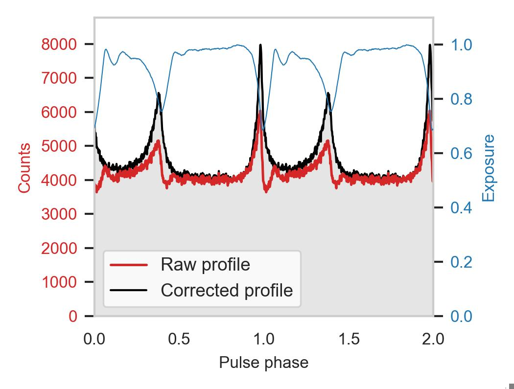
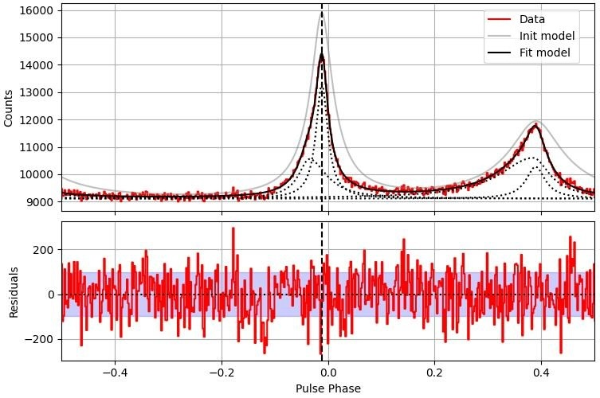
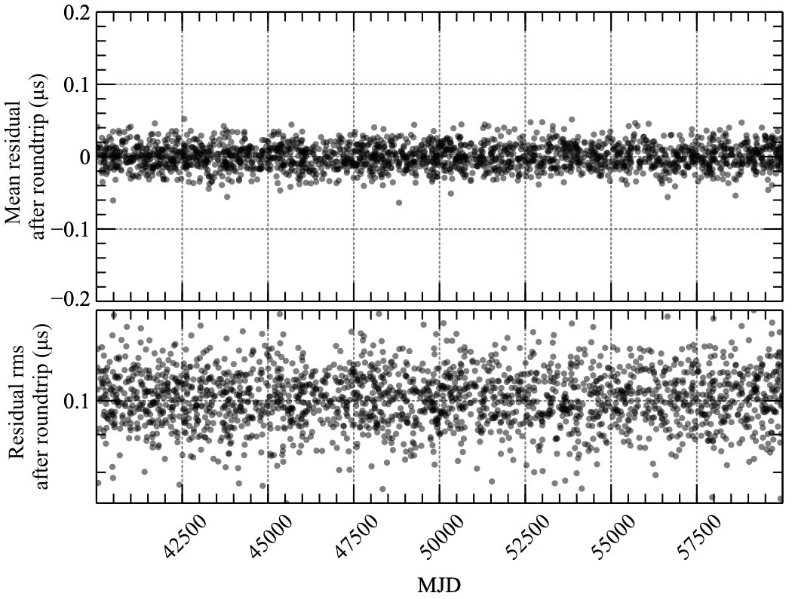
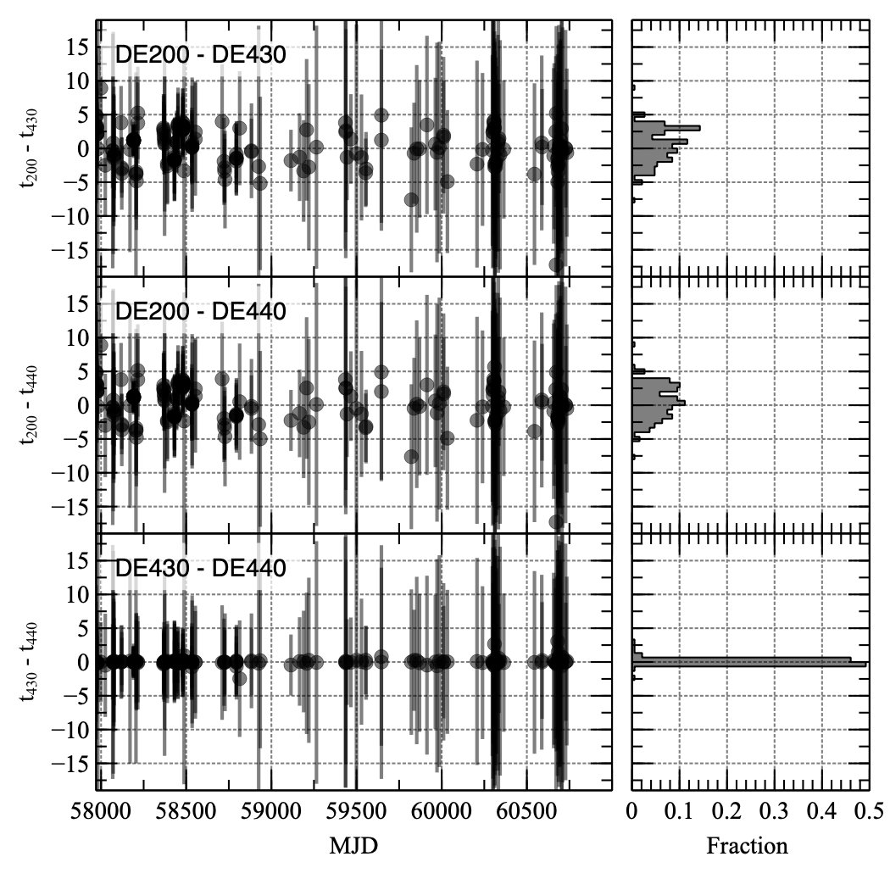
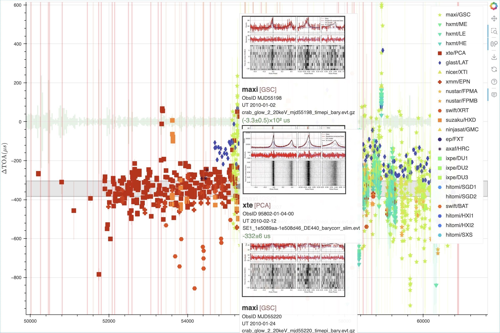
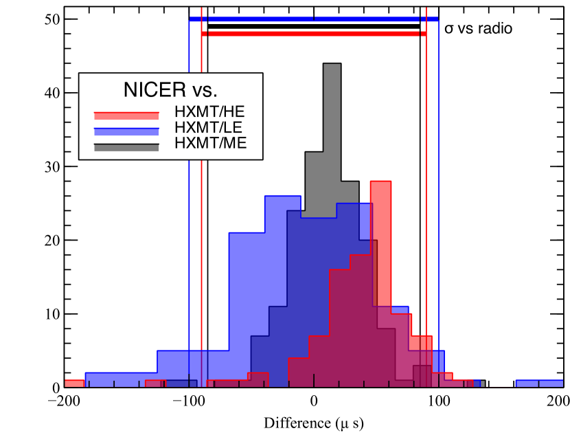
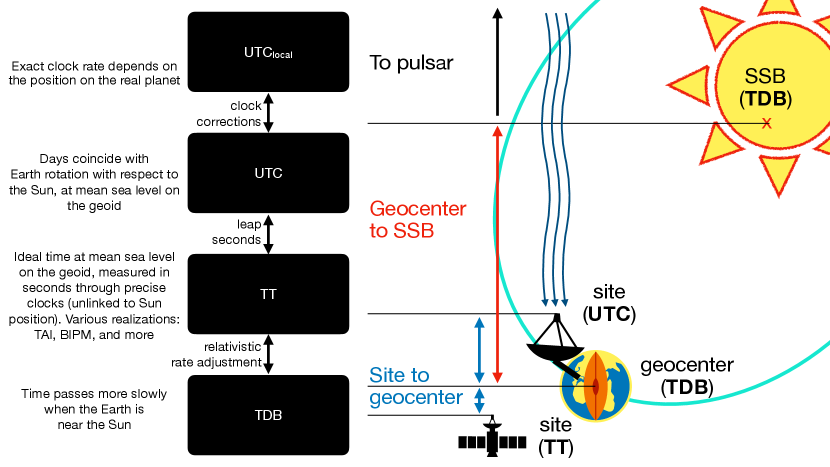

طريقة بسيطة ومرنة للمعايرة المتقاطعة للتوقيت في البعثات الفضائية
الملخص
تجرى معايرة التوقيت، أو المعايرة المتقاطعة للتوقيت، في الأدوات الفلكية غالبا بمقارنة أزمنة وصول النباضات (TOAs) بنموذج توقيت مرجعي. وفي فلك الطاقات العالية، يؤثر اختيار التقويمات الفلكية للنظام الشمسي ومواضع المصدر المستخدمة لتحويل أزمنة وصول الفوتونات إلى مركز الكتلة تأثيرا كبيرا في الإجراء، مما يستلزم إعادة معالجة كاملة للبيانات كلما استعمل اصطلاح جديد. تكيّف طريقتنا، التي طورت ضمن أنشطة الاتحاد الفلكي الدولي لمعايرة الطاقات العالية (IACHEC)، حلا توقيتيا قائما للنباض مع تقويمات JPL فلكية ومواضع مصدر اعتباطية، وذلك بمحاكاة TOAs مركزية أرضية وإعادة ملاءمة نماذج التوقيت (منفذة باستخدام PINT). نتحقق من الإجراء ونطبقه على آلاف أرصاد نباض السرطان من 15 بعثة تمتد على 1996–2025، مبرهنين اتساق TOAs بين التقويمات الفلكية عند مستوى ، باستخدام تقويم Jodrell Bank الشهري المعتمد على DE200/FK5 مرجعا مشتركا. ونصدر أداة TOAExtractor مفتوحة المصدر وقاعدة بيانات TOA لدعم دراسات المعايرة والدراسات العلمية المستقبلية. يتوافق أداء توقيت الأدوات عموما مع مواصفات البعثات؛ إذ تتغير إزاحة الطور بين الأشعة السينية والراديو مع الطاقة والزمن عند مستوى متسق هامشيا مع لايقينيات التقويم الفلكي الراديوي، مما يحفز متابعة منسقة متعددة الأطوال الموجية.
1 مقدمة
الاتحاد الفلكي الدولي لمعايرة الطاقات العالية (IACHEC) تعاون بين بعثات فضائية يهدف إلى تحسين معايرة أدوات الطاقات العالية. يجمع IACHEC العلماء وفرق المعايرة من مراصد متعددة لتبادل الخبرات، والتحقق المتقاطع من النتائج، وتطوير أفضل الممارسات للمعايرة في فلك الأشعة السينية وأشعة غاما. ومن خلال جهود منسقة، ييسر IACHEC مقارنة البيانات القادمة من بعثات مختلفة، ويحدد الفروق النظامية، ويعمل على إرساء معايير معايرة مشتركة. وهذا النهج التعاوني أساسي لضمان موثوقية القياسات الفيزيائية الفلكية عند الطاقات العالية واتساقها عبر المجتمع الدولي.
تركز مجموعة عمل التوقيت (TWG) على المعايرة المتقاطعة الزمنية للبعثات المختلفة. ويتمثل هدف TWG في تطوير طرائق لمقارنة أداء التوقيت في البعثات المختلفة، باستخدام النباضات ساعات مشتركة. النباضات نجوم نيوترونية (NSs) تصدر حزما من الإشعاع تمسح السماء كمنارة بحرية، مولدة الإشارة النبضية المميزة. وبعد اكتشاف النباضات في النطاق الراديوي (Hewish et al., 1968)، رصدت لاحقا عند جميع الأطوال الموجية، من الراديو إلى أشعة غاما (Lovelace et al., 1968; Tananbaum et al., 1972; Nelson et al., 1970; Gupta et al., 1978; Abdo et al., 2013).
وبكتلة قدرها 1-2 ونصف قطر يقارب 10 km، تعد NSs أكثف الأجسام في الكون باستثناء الثقوب السوداء ذات الكتلة النجمية. ولشدة تراصها، تبدو فعليا نقطية كما تراها النجوم القريبة، وتكون قوى المد عادة مهملة. ويمكن أن تتغير سرعتها الدورانية مع الزمن بفعل عدد من العوامل الذاتية والخارجية. كما أن انبعاث الإشعاع الكهرومغناطيسي ورياح الجسيمات من مجالها المغناطيسي الدوار ينتج تباطؤا دورانيا مميزا.
غير أن NSs ليست على الأرجح كرات متجانسة، بل يرجح أن لها بنية داخلية معقدة تتضمن قشرة صلبة ولبا فائق الميوعة. ويعتقد أن “الاختلاجات” في تطورها الدوراني، التي تنتج تغيرات فجائية في فترة الدوران أو مشتقاتها، تنشأ تحديدا من تثبيت الطبقات الداخلية للنجم وفك تثبيتها (انظر Manchester, 2018, للمراجعة). كما يمكن للتراكم من نجم مرافق أن يغير فترة دوران النباض، إما بإضافة زخم زاوي إلى النجم (تسريع الدوران) أو بإزالته (إبطاء الدوران) (Ghosh and Lamb, 1978). أما أسرع النباضات دورانا، المعروفة بالنباضات الراديوية الملي ثانية (MSPs)، فهي عادة نباضات قديمة مرت بعملية تسريع دوران عبر التراكم ولها مجال مغناطيسي ضعيف، وهو ما يحد من الضجيج الدوراني ويزيد استقرار الدوران. وفي الواقع، يمكن التنبؤ بدوران بعض MSPs بدقة تبلغ ميكروثواني على مدى بضع سنوات (مثلا Reardon et al., 2024).
ومع أن آليات الانبعاث الدقيقة في النباضات ما زالت محل نقاش، فإن NSs تمتلك مجالا مغناطيسيا سطحيا شديد القوة (من 108 إلى 1015 G)، وهو المسؤول عن معظم ظواهرها. فأولا، يعتقد أيضا أن فقدان الطاقة من المجال ثنائي القطب الدوار، الذي يبطئ النباضات، يغذي معظم النباضات الراديوية (وتسمى لهذا السبب النباضات المدفوعة بالدوران، أو RPPs) ذات G (Lorimer, 2008). أما النباضات المتراكمة فتستمد طاقتها من تراكم المادة التي يوجهها المجال المغناطيسي إلى السطح (Ghosh and Lamb, 1978)، منتجة انبعاثا ساطعا في الأشعة السينية. ويعتقد أن النباضات ذات أعلى المجالات المغناطيسية، المعروفة بالمغناطارات، تستمد طاقتها من اضمحلال المجال المغناطيسي نفسه، وتظهر ظواهر معقدة تشمل التوهجات والاندفاعات العملاقة عند الطاقات العالية (Rea and De Grandis, 2025).
وبسبب استقرارها الدوراني العالي، كثيرا ما استعملت النباضات ساعات معيارية، مع تطبيقات تمتد من كشف الموجات الثقالية (Taylor and Weisberg, 1982; Agazie et al., 2023; EPTA Collaboration et al., 2023) إلى الملاحة الفضائية (Sheikh et al., 2006; Emadzadeh and Speyer, 2011; Anderson et al., 2015; Mitchell et al., 2018; Yidi et al., 2023). والأكثر إثارة أن النباضات اقترحت ساعات مرجعية لإنشاء مقياس زمني جديد مستقل عن الساعات الذرية (مثلا Hobbs et al., 2020). وثمة تطبيق آخر، هو موضوع هذا العمل، يتمثل في معايرة توقيت الأدوات الفلكية (مثلا Kuiper et al., 2003; Rots et al., 2004; Smith et al., 2008; Terada et al., 2008b; Molkov et al., 2010; Martin-Carrillo et al., 2012; Cusumano et al., 2012; Deneva et al., 2019; Bachetti et al., 2021; Basu et al., 2021; Tuo et al., 2022; Cusumano et al., 2024).
إن PSR B0531+21، المعروف أيضا باسم PSR J0534+2200 أو نباض السرطان بسبب موقعه في مركز سديم السرطان M1، هو RPP بفترة دوران قدرها ms، ومعدل تباطؤ دوران قدره s s-1، وهو ما يقابل لمعان تباطؤ دوران قدره erg s-1 (Lorimer, 2008). وعلى الرغم من حداثة عمره11 1 حُدد سديم السرطان على أنه بقايا SN 1054، الذي سجله في 1054 A.D. فلكيون في أنحاء العالم (Mayall, 1939) وعدم استقراره الشديد وفق معايير النباضات (بما يشمل الاختلاجات ومعدل تباطؤ دوران متغيرا يرقى إلى “ضجيج توقيت” كبير)، فإنه أحد أفضل RPPs المدروسة في السماء، لأنه شديد السطوع عبر الطيف الكهرومغناطيسي، ولأن طيف سديم السرطان مستقر نسبيا (ويشبه قانون القدرة في الأشعة السينية) مما جعله معاير تدفق ممتازا، وهذا ليس أقل أهمية. ويوفر ذلك لفلكيي النباضات ثروة من الأرصاد “المجانية” للنباض. وقد تتبع مرصد Jodrell Bank تطور دوران النباض طوال أربعة عقود (Lyne et al., 1993)، وما يزال اليوم يوفر تقويما فلكيا شهريا (تقويم Jodrell Bank الشهري، ويشار إليه فيما بعد بـ JBE) لتردد دوران النباض.
وهذا يجعل نباض السرطان أداة ممتازة لتتبع معايرة توقيت أدوات الأشعة السينية، وقد استخدمته على هذا النحو بعثات كثيرة (مثلا Kuiper et al., 2003; Rots et al., 2004; Smith et al., 2008; Terada et al., 2008b; Molkov et al., 2010; Cusumano et al., 2012; Martin-Carrillo et al., 2012; Bachetti et al., 2021; Basu et al., 2021; Tuo et al., 2022; Cusumano et al., 2024).
تستخدم هذه البعثات عادة JBE لطي بيانات النباض والحصول على ملفات النبض وTOAs، ثم تقارنها بالـ TOAs المتوقعة من التقويمات الفلكية. وتكمن المشكلة الرئيسة في هذا النهج في أن تقويمات Jodrell Bank الفلكية مبنية على تقويم النظام الشمسي DE200 (Standish, 1982)، وهو قديم نسبيا، ولا تأخذ في الحسبان الحركة الخاصة، فتفترض أن موضع النباض ثابت في السماء. وهذا منطقي لتوفير حل توقيت متسق لنباض السرطان، لكنه ليس مثاليا لأغراض المعايرة المتقاطعة، لأنه يجبر جميع البعثات على استخدام التقويم الفلكي وموضع المصدر نفسيهما، فيفقد المرونة عند جمع البيانات من بعثات مختلفة، وغالبا ما يتطلب إجراء معالجة بيانات منفصلة لمعايرة التوقيت والتحليل العلمي.
في هذه الورقة، نقدم طريقة جديدة لمقارنة أزمنة وصول (TOAs) إشارات النباضات التي تحصل عليها أدوات مختلفة، حتى عندما تستخدم تقويمات JPL فلكية ومواضع مصدر وأطرا مرجعية مختلفة. ونطبق الطريقة على المعايرة المتقاطعة الزمنية لبعثات مختلفة، مستخدمين تقويم Jodrell Bank الشهري لنباض السرطان مرجعا مشتركا. في القسم 2، نصف سير العمل المعتاد لتوقيت النباضات وخطوات معالجة البيانات الخاصة ببيانات الأشعة السينية وأشعة غاما. في القسم 3، نصف طريقتنا لتكييف حلول توقيت النباضات مع تقويمات فلكية ومواضع مصدر مختلفة. في القسم 4، نعرض نتائج تطبيق طريقتنا على مجموعة بيانات كبيرة من أرصاد نباض السرطان من بعثات متعددة. وأخيرا، في القسم 5، نلخص نتائجنا ونناقش تبعاتها على جهود معايرة التوقيت المستقبلية. ويحتوي الملحق A على تعريفات المقاييس الزمنية والاصطلاحات المستخدمة في توقيت النباضات، بينما يحتوي الملحق B على تفاصيل معالجة البيانات لكل بعثة مستخدمة في هذا العمل.
2 المعالجة
2.1 سير العمل المعتاد لتوقيت النباضات
إشارات النباضات دورية بطبيعتها، إذ تتكرر عند فترة دوران النباض، التي تقع عادة في مجال من الميلي ثانية إلى الثواني (مع حالات قليلة لنباضات تبلغ فترات دورانها ساعات؛ انظر المراجعات Lorimer 2008; Rea and De Grandis 2025). ومن الشائع التعبير عن الإشارة عند زمن بدلالة طور دوران النباض22 2 نعبر عن الطور من 0 إلى 1. وقد تستخدم أعمال أخرى المجال 0-. ، المعرف عبر تردد دوران النباض ومشتقه الزمني ، ، بتوسع تايلور الآتي:
| (1) |
حيث إن هو TOA مرجعي.
تكون النبضات المنفردة للنباضات عادة خافتة جدا بحيث لا تكشف مباشرة، ولا سيما في النطاق الراديوي، وقد تكون أشكالها شديدة التغير؛ لذلك تطوى البيانات عند فترة دوران النباض لإنتاج ملف نبض متوسط يكون، على النقيض، مستقرا جدا ويشكل “بصمة” مميزة لنباض معين. ويتم الطي عبر “تقطيع” السلسلة الزمنية إلى مقاطع متماثلة طول كل منها فترة دوران النباض. ثم تؤخذ متوسطات هذه المقاطع معا، وإذا كانت المقاطع بالطول الصحيح تماما، تعظم نسبة الإشارة إلى الضجيج في الملف الناتج. وعندما تتكون السلسلة الزمنية من فوتونات، يجرى الطي ببناء مدرج تكراري لطور الفوتون، أي أساسا للكسر من فترة دوران النباض الذي انقضى منذ النبضة الأخيرة.
يعرف TOA جديد عادة بأنه زمن وصول قمة ملف النبض المطوي (أو نقطة مرجعية أخرى فيه)، وذلك يعطي الطور 0. ويمكن تحديد القيمة العظمى بدقة عبر نمذجة ملف النبض بسلسلة من المكونات الغاوسية أو المنحنيات المكافئة. وعند حساب TOAs من أداة معينة، إذا لم يتطور ملف النبض مع الزمن، يجرى الإجراء عموما بحساب ارتباط متبادل مع ملف قالب و/أو باستخدام خوارزمية FFTFIT، وهي ملاءمة كاي-تربيع لتدرج طور خطي بين التمثيلين الفورييريين لقالب والملف المطوي (Taylor, 1992). ويكون القالب عادة نموذجا لملف ذي نسبة إشارة إلى ضجيج عالية للنباض نفسه. وفي فلك الطاقات العالية، تستعمل أحيانا مقاربات بديلة قائمة على دالة الإمكان (Livingstone et al., 2009; Ray et al., 2011; Clark et al., 2015; Nieder et al., 2019, مثلا). وفي هذه الورقة، نستخدم طريقة قائمة على ملاءمة ملفات النبض بالإمكان الأعظمي (مع تجنب التعريف القبلي للقالب)، انظر القسم 3.3.
2.2 معالجة بيانات الأشعة السينية وأشعة غاما
يتطلب توقيت النباضات اهتماما شديدا بتفاصيل طريقة تسجيل أزمنة القياس.
تستخدم هذه الورقة بيانات من 15 بعثة، لكل منها إجراء خاص لاختزال البيانات يتبع عادة النمط نفسه: فباستخدام مصادر متعددة للبيانات، من قياسات “المتابعة التشغيلية” المسجلة على المركبة الفضائية إلى معلومات الطقس الفضائي، تنتج خطوط أنابيب كل بعثة مجموعات بيانات “منقاة” في صورة “ملفات أحداث”، وهي عادة ملفات FITS تتضمن جدولا يحوي طابعا زمنيا وعددا من الخواص الفيزيائية لكل كشف يفي ببعض معايير الجودة. ويمكن العثور على تفاصيل خطوط أنابيب المعالجة القبلية لكل بعثة في الملحق B.
تعبر الطوابع الزمنية للأحداث عادة بزمن البعثة المنقضي (MET)، الذي يعطي عدد الثواني منذ تاريخ يولياني معدل مرجعي (MJD) يسمى MJDREF، مستخدما عادة مقياس الزمن الأرضي (ولتعريفات المقاييس الزمنية والاصطلاحات، انظر الملحق A). يكتب MJDREF في ترويسة ملف FITS، إما كمفتاح مفرد، أو بوصفه تركيبة جزئه الصحيح MJDREFI والجزء الكسري MJDREFF33 3 https://heasarc.gsfc.nasa.gov/docs/heasarc/ofwg/docs/summary/ogip_93_003_summary.html. وعندما يحدث ذلك، يشفر MJDREFF أحيانا عدد الثواني الكبيسة (مقسوما على 86400 للتعبير عنها بالأيام). وفي هذه الحالة، قد يعطي استخدام MJDREFI وحده أزمنة على مقياس UTC، بينما يعطي جمع MJDREFF + MJDREFI أزمنة على مقياس TT. وفي كثير من الأحيان، يضيف مفتاح TIMEZERO تصحيحا عاما، معبرا عنه بالثواني، إلى أزمنة الأحداث. وفي الكواشف التي تكون مدة القياس فيها (وتسمى فيما يلي “زمن الإطار”) ذات شأن، يستخدم مفتاح TIMEDEL للدلالة على زمن الإطار، ويستخدم TIMEPIXR لتحديد ما إذا كانت الطوابع الزمنية تشير إلى بداية (0)، أو منتصف (0.5)، أو نهاية (1) زمن الإطار. وأخيرا، تحمل بعض البعثات مراجع زمنية تنجرف محاذاتها إلى UT (مثل مذبذبات الكوارتز التي يمكن أن يتغير ترددها تبعا لدرجة الحرارة)، ويمكن لهذه البعثات أن توفر على الأرض تصحيحا إضافيا لمرجعها الزمني. ونشير إلى هذا الحد الإضافي أدناه باسم FINECLOCK. ومن ثم يمكن حساب الزمن الكلي على مقياس TT، مقيسا عند المركبة الفضائية، كما يأتي44 4 https://heasarc.gsfc.nasa.gov/docs/xte/abc/time_tutorial.html MJD(TT) = (MJDREFI + MJDREFF) + (TIME + TIMEZERO + FINECLOCK + (0.5 - TIMEPIXR) * TIMEDEL) / 86400. تسمح مواصفة FITS بمقاييس زمنية مختلفة، شريطة أن يكون مفتاح TIMESYS مختلفا عن TT. وكما ذكرنا من قبل، يمكن في بعض البعثات حساب MJD(UTC) بمجرد حذف قيمة MJDREFF من الصيغة أعلاه.
في دراسات النباضات الراديوية، من الشائع حساب زمن وصول النبضات عبر الطي في الإطار الطوبومركزي (أي كزمن UT عند موقع التلسكوب الراديوي) باستخدام الساعات الذرية مرجعا، ثم التحويل إلى SSB أثناء مرحلة النمذجة، تبعا لإصدار التقويم الفلكي المستخدم في النموذج.
في بعثات الطاقات العالية، يتطلب كشف النبضات غالبا تكاملا على مدارات متعددة للأقمار الاصطناعية، مما يجعل TOAs الطوبومركزية غير عملية. لذلك، في فلك الأشعة السينية، يحدث تحويل الأزمنة إلى SSB، أو التصحيح إلى مركز الكتلة، غالبا قبل الطي، باستخدام أدوات مثل barycorr FTOOL مع معلومات عن موضع القمر الاصطناعي وسرعته مشفرة في ملفات المدار/الاتجاه التي تشاركها مراكز العمليات العلمية بوصفها جزءا من بيانات “المتابعة التشغيلية” لكل رصد.
تعد إحداثيات المصدر معاملا أساسيا للتصحيح إلى مركز الكتلة، كما سنفصل في القسم 2.3. وتشفر أدوات التصحيح إلى مركز الكتلة المختلفة الإحداثيات المستخدمة في مفاتيح FITS مختلفة (مثلا RA,DEC_OBJ لأداة barycorr، وRA,DEC_TDB لأداة barycen الخاصة بـ HEASOFT).
تسترجع جميع البيانات ذات الصلة من ملفات FITS باستخدام Stingray (Huppenkothen et al., 2019).
2.3 الاتساق في التقويمات الفلكية والإحداثيات والأطر المرجعية
سواء أجري التصحيح إلى مركز الكتلة قبل الطي أم بعده، فإن الإجراء يتضمن عددا من الخطوات والقرارات الدقيقة جدا، التي يمكن أن تدخل أخطاء نظامية في TOAs. يعرف مركز كتلة النظام الشمسي بأنه مركز كتلة النظام الشمسي، وهو ليس في مركز الشمس، بل عند نقطة تتحرك حولها بسبب الجذب الثقالي للكواكب والأجسام الأخرى في النظام الشمسي. ويتم ذلك من خلال استخدام التقويمات الفلكية للنظام الشمسي، وهي نماذج رياضية تصف مواضع أجسام النظام الشمسي وحركاتها. وفي فلك الأشعة السينية، جرت العادة على استخدام تقويمات JPL التطويرية، التي ينتجها Jet Propulsion Laboratory وتنتج عن التكامل العددي لمعادلات حركة أجسام النظام الشمسي55 5 توجد تقويمات فلكية بديلة، مثل تلك الصادرة عن Institute of Celestial Mechanics and Ephemeris Calculation (IMCCE)، المسماة INPOP، وتلك الصادرة عن Institute of Applied Astronomy, Russian Academy of Sciences (IAA RAS)، المسماة EPM، والتي توفر دقة مشابهة (Moiseev and Emelyanov, 2024)
تحدث تقويمات JPL الفلكية بانتظام ويشار إليها برقم، مثل DE200، وDE405، وDE421، وDE430، إلخ. وقد يكون لاختيار التقويم الفلكي أثر كبير في إجراء التصحيح إلى مركز الكتلة، إذ يدخل أخطاء نظامية في TOAs تصل إلى بضع ميلي ثوان، وهي غالبا كسر مهم من فترة دوران النباض. وثمة مسألة أخرى هي اختيار TDB أو TCB، كما يذكر في الملحق A.
ثم إن موضع النباض في السماء مهم أيضا، لأنه يحدد زمن انتقال الضوء من النباض إلى SSB. يعطى الخطأ في زمن الوصول إلى أداتنا الناتج عن خطأ في المطلع المستقيم بالصيغة الآتية:
| (2) |
حيث إن هي المسافة بين الأرض والشمس بالثواني الضوئية، و هو الميل، و هي الزاوية التي يرسمها SSB والأرض والنباض. وعمليا، تكون الإزاحة العظمى في TOA خلال سنة واحدة من الأرصاد
| (3) |
والأثر عياني وكثيرا ما يستخدم لتحسين موضع النباض في السماء بدقة تضاهي أرصاد VLBI عالية الاستبانة أو الأرصاد البصرية. ويمكن للحركة الخاصة أيضا أن تنتج أثرا مهما في TOAs وأن تقاس من خلال توقيت النباضات. وينبغي الانتباه إلى اختيار الإحداثيات: فالمطلع المستقيم والميل يعطون عادة عند اعتدال J2000 في إطار إحداثيات ICRS66 6 بدقة أكبر، ICRS هو اسم نظام الإحداثيات، بينما ينبغي تسمية الإطار ICRF؛ غير أن barycorr يستخدم هذه التسمية المربكة إلى حد ما، ولذلك قررنا استعمالها نفسها تبسيطا.، لكن تقويمات JPL الفلكية DE200-DE402 تستخدم إطار FK5 المرجعي الأقدم، الذي يختلف عن إطار ICRS بجزء من الثانية القوسية وينتج إزاحة تصل إلى في معالجتنا.
ما دامت البيانات مصححة إلى مركز الكتلة على نحو متسق باستخدام تقويم فلكي واحد، ونظام زمني واحد، وموضع مصدر واحد، فإن الاختيارات المختلفة تقود عادة إلى تغيرات صغيرة في نتائج التحليل. لكن عندما تجمع البيانات وتعالج قبليا بواسطة فرق متعددة باستخدام اختيارات غير متسقة، يمكن للنظاميات أن تقوض التحليل.
2.4 استخدام تقويم Jodrell Bank الفلكي
تتتبع تقويمات Jodrell Bank الشهرية (ويشار إليها فيما بعد بـ JBE؛ Lyne et al. 1993) التاريخ الدوراني لنباض السرطان مع الزمن، وتنشر حلا توقيتيا جديدا كل شهر تقريبا. وهذه المجموعة الثمينة من البيانات، ذات امتداد زمني يقارب أربعة عقود، هي المرجع المثالي لتوقيت نباض السرطان. وتشارك البيانات بصيغتين مختلفتين: ملف نصي مفصول بمسافات يتضمن تردد الدوران، ومشتقا دورانيا واحدا، وTOA عند مركز كتلة النظام الشمسي، وصيغة CGRO77 7 https://www.jb.man.ac.uk/research/pulsar/crab/CGRO_format.html؛ لاحظ أن الإحداثيات المقتبسة في هذا الملف تقابل (R.A.، Dec.) 05:34:31.972 +22:00:52.070، على بعد 4.5 ميلي ثانية قوسية من إحداثيات JBE الرسمية 05:34:31.97232 +22:00:52.069، وأن هذا الحل لا يورد قياس تشتت، ولذلك لا يكون مفيدا إلا للبيانات غير الراديوية تتضمن مشتقين للدوران وTOA عند مركز الأرض، معرفا بأنه قمة الملف الراديوي عند تردد لا نهائي (أي مصحح للتشتت بين النجمي). لنفترض أن رصدنا بالأشعة السينية أجري عند MJD 56000. يعطي السطر الموافق في ملف صيغة CGRO الحل بين MJDs 55987–56018، مؤلفا من تردد دوران =29.7025600117591 Hz، ومشتق دوران Hz s-1، ومشتق ثان Hz s-2. وعلاوة على ذلك، يتضمن هذا الحل TOA عند مركز الأرض (MJD 56003.000000285). ينبغي أن تكفي هذه المكونات لنموذج يصف طور السرطان خلال الشهر بتشتت جذر متوسط مربعات قدره 0.6 ميلي فترة، وهو معلن أيضا في هذا الحل. ومع ذلك، تنشر تقويمات JBE الفلكية حل التوقيت عند مركز كتلة النظام الشمسي باستخدام إطار DE200 FK5 المرجعي، وهو قديم نسبيا، ومن دون احتساب الحركة الخاصة، أي بافتراض أن موضع النباض ثابت في السماء عند موضع J2000 (R.A.، Dec.) 05:34:31.97232 +22:00:52.0690 في إطار FK5، أو (R.A.، Dec.) 05:34:31.970490 +22:00:52.087768 في إطار ICRS88 8 في جميع أنحاء الورقة، نستخدم الدوال في astropy.coordinates لإجراء تحويل الإحداثيات، مثلا بتعريف coordFK5 = SkyCoord(ra, dec, frame="fk5") ثم استخدام coordFK5.icrs للتحويل إلى ICRS. ويحدث ذلك رغم الحركة الخاصة الكبيرة البالغة milliarcsec/yr، التي تعني أن النباض تحرك أكثر من 0.5″عن الموضع المقتبس في JBE (Ng and Romani, 2006; Kaplan et al., 2008; Gaia Collaboration, 2020; Lin et al., 2023). كما قيس اختلاف منظر قدره mas (Lin et al., 2023)، لكن أثره في TOAs مهمل () بالنسبة إلى نطاق هذه الورقة. انظر الجدول 1 لمقارنة إحداثيات نباض السرطان التي يوردها JBE وGaia Collaboration (2020) في أطر مرجعية مختلفة.
| Reference frame | Jodrell Bank (Epoch 1970.099 9 The Crab notes document does not state an epoch. A review by Taylor et al. (1993) quotes the same position citing McNamara (1971), ref. 156 in Table 1. In McNamara, the epoch is 1971.0 but the right ascension is different –05:31:31.428 (B1950) instead of 05:31:31.405. The position is assumed to be fixed in the JBE, in any case, so the epoch has no practical effect. ) | Gaia (Epoch 2016.0) | ||
| RA | Dec | RA | Dec | |
| FK4 (B1950) | 05:31:31.428 | +21:58:54.402 | 05:31:31.405 | +21:58:54.466 |
| FK5 (J2000) | 05:34:31.972 | +22:00:52.069 | 05:34:31.949 | +22:00:52.135 |
| ICRS (J2000) | 05:34:31.970 | +22:00:52.088 | 05:34:31.947 | +22:00:52.154 |
والسبب هو الاتساق: فمستخدمو التقويمات الفلكية لا يحتاجون إلى القلق بشأن استخدام أطر مرجعية مختلفة لمجموعات بيانات تمتد عبر حقب مختلفة (Lyne، اتصال خاص). لذلك فإن استخدام JBE في دراسات توقيت الأشعة السينية يفرض تصحيح البيانات إلى مركز الكتلة باستخدام المجموعة نفسها من التقويمات الفلكية والموضع القديمين، مما يفقد المرونة عند جمع البيانات من جميع البعثات المختلفة (التي ربما صححت إلى مركز الكتلة باستخدام اصطلاحات مختلفة).
3 دعم عدة تقويمات فلكية من JPL في وقت واحد
طورنا لهذا العمل تقنية لمقارنة TOAs مأخوذة ببعثات مختلفة، تستخدم كل منها تقويمات فلكية مختلفة للنظام الشمسي، مع إبقاء JBE مرجعا. لننظر في رصد Suzaku للسرطان المنفذ عند MJD 56000، ولنفترض أننا نريد حساب زمن وصول قمة الأشعة السينية مقارنة بالقمة الراديوية. يمكننا من حيث المبدأ استخدام الحل المذكور أعلاه لطي البيانات وحساب TOA. ولنفترض أنه في عملنا العلمي لدينا بالفعل بيانات لهذا الرصد مصححة إلى مركز الكتلة باستخدام تقويم النظام الشمسي JPL-DE430 وأحدث موضع للمصدر مع احتساب الحركة الخاصة. وكما رأينا، فإن استخدام هذه البيانات مع تقويم Jodrell Bank الفلكي قد يؤدي إلى خطأ توقيت يصل إلى بضع ميلي ثوان، وهو أكبر بثلاث رتب قدرية من الدقة التي نريدها لأغراض المعايرة المتقاطعة.
ولتجنب إعادة تصحيح آلاف الأرصاد من 13 بعثة إلى مركز الكتلة باستخدام JPL-DE200 وموضع FK5، طورنا الإجراء الآتي:
-
1.
نقوم بمحاكاة مجموعة من TOAs عند تردد لا نهائي عند مركز الأرض باستخدام حل التوقيت JB أعلاه في تقويم DE200، مع تشتت صغير قدره 0.1 ؛
-
2.
إن الفرق بين TOAs عند مركز الأرض باستخدام تقويمات فلكية مختلفة مهمل: فعلى سبيل المثال، في مدار XMM-Newton ، وهو الأوسع في عينة بعثاتنا، يبلغ ؛ ومن ثم نفترض أن TOAs نفسها تبقى كما هي باستخدام تقويم DE430؛
-
3.
نلائم حلا توقيتيا جديدا لهذه TOAs، باستخدام تقويم DE430 والموضع نفسه في ICRS المستخدم لتصحيح بيانات الأشعة السينية إلى مركز الكتلة؛
-
4.
نتحقق من أن تشتت TOAs مع الحل الجديد يقارن بأشرطة خطأ البيانات المحاكاة، ومن ثم فهو أيضا أصغر بكثير من تشتت جذر متوسط المربعات المعلن في JBE؛ ونجد أن مشتقي التردد يكونان دائما كافيين للمهمة على مقياس زمني يبلغ شهرا لـ JBE.
عند هذه النقطة، أصبح لدينا حل توقيت جديد متسق مع JBE، لكنه يستخدم تقويم DE430. ويمكن تنفيذ هذا الإجراء مباشرة باستخدام حزمة البرمجيات PINT (Luo et al., 2021)، التي تدعم مجموعة كبيرة من نماذج التوقيت وتقويمات JPL الفلكية. ويمكن حفظ الحل في ملف معاملات بصيغة PINT (Luo et al., 2021)، يحتوي على جميع المعلومات ذات الصلة. ويشفر زمن الوصول إلى مركز الأرض من JBE في النموذج الجديد بوصفه TZRMJD، باستخدام 0 بوصفه مرصدا. ويجب إيلاء عناية خاصة لاختيار الإحداثيات الملائمة لتقويم فلكي معين. يستخدم DE200 إطار FK5، بينما يستخدم DE402 وما بعده ICRS. وقد يكون فرق أزمنة الوصول عند استخدام أطر إحداثيات خاطئة كبيرا، في حدود ميلي ثوان.
3.1 الطي
بعد الحصول على حل توقيت مناسب لرصدنا، يمكننا استخدامه لطي أزمنة وصول الأحداث والحصول على ملف نبض. يحسب طور النبضة بتوسع تايلور المعتاد في المعادلة 1، باستخدام نموذج التوقيت المستحصل عليه في القسم 3، ولا يكون ملف النبض سوى مدرج تكراري لأطوار النبضة، بين 0 و1، باستخدام حاوية طورية. ويشفر التردد ومشتقات التردد في حل التوقيت. وعند هذه النقطة، يكون المكون الأساسي المفقود هو . ويجب حساب ذلك بحيث يقع TOA المرجعي في حل JBE عند الطور 0. فإذا فعلنا ذلك، ونظرا إلى أن الأطوار محالة أصلا إلى TOA الراديوي، فستكون ملفاتنا المطوية تلقائيا عند الطور 0 في قمة TOA الراديوي. وتنجز PINT جميع التحويلات الزمنية ذات الصلة باستخدام ملف المعاملات المنشأ بالإجراء الوارد في القسم 3. يمكن حساب طور كل فوتون بتحويل أزمنة وصول الأحداث على نحو صحيح من ثواني البعثة المنقضية إلى MJD واستخدام الطريقة TimingModel.phase. وقسمت الأرصاد التي تمتد عبر عدة حلول JBE (مثلا من Fermi وIXPE) إلى المجالات الزمنية المناسبة. وفي الأرصاد ذات الإنتاجية العالية جدا التي تحوي أكثر من 100M فوتون (مثلا غالبا من NICER)، حسبنا TOA كل 50M فوتون.
3.2 تصحيح الزمن الميت لملفات النبض

بالنسبة إلى البعثات المتأثرة بالزمن الميت، مثل NuSTAR ، صححنا ملفات النبض باستخدام العمود PRIOR في قائمة الأحداث، الذي يعطي الزمن الحي قبل الحدث الحالي، متبعين إلى حد كبير الإجراء الذي استخدمه Madsen et al. (2015). وباختصار، استخدم الزمن الحي قبل كل حدث لتقدير التعرض الفعال في كل حاوية من ملف النبض. فعلى سبيل المثال، لننظر في فوتون وصل عند الزمن ، وله قيمة في العمود PRIOR قدرها 1 ms. وهذا يعني أن الزمن الحي قبل هذا الفوتون بدأ عند . ولنسم طور ملف النبض الموافق لـ ، و الطور الموافق لـ . وسيضيف إجراؤنا 1 إلى جميع حاويات الطور بين و، مع احتساب مناسب لتغطية الحاوية الكسرية والتفافات الطور عند بداية كل ملف نبض ونهايته. وفي النهاية، سيطبع التعرض إلى قيمة عظمى قدرها 1، وسيقسم ملف النبض على هذا التعرض الفعال (بحيث تضخم حاويات النبض الأكثر تأثرا بالزمن الميت). وهذا الإجراء متاح في الشيفرة المنشورة علنا pulse_deadtime_fix (Bachetti, 2025b). وتعرض نتيجة هذا الإجراء في الشكل 1.
بالنسبة إلى بيانات Chandra/HRC، المتأثرة بلاخطية التدفق عند معدلات العد العالية التي لا يصفها نموذج زمن ميت جيدا، نطبق عامل تصحيح
| (4) |
بين 12 و24 عدة في الثانية على كل حاوية من الملف المطوي، متبعين Pease and Donnelly (1998).
3.3 حساب البواقي

بعد أن نحصل على الملف المطوي، وكما رأينا في القسم 3.1، ينبغي أن يتطابق الطور 0 للملف مع القمة الراديوية الرئيسة. وكما هو معروف جدا من الأدبيات (Rots et al., 2004)، لن تتطابق القمة في الأشعة السينية مع القمة الراديوية، ونحتاج إلى طريقة لقياس هذا التأخر، يمكن استخدامها بعد ذلك لمقارنة أداء بعثات الطاقات العالية المختلفة.
توجد أساسا طريقتان مستخدمتان في الأدبيات لحساب طور نباض: محاذاة الملف المطوي مع قالب (مثلا FFTFIT، Taylor 1992) أو ملاءمة نموذج لملف النبض (مثلا Nelson et al., 1970). والطريقة الأولى هي الأكثر استقرارا في الظروف المثالية، عندما يكون قالب النبضة صحيحا، إذ تقدم قياسات دقيقة حتى في البيانات الضجيجية. لكن إذا لم يكن القالب صحيحا، كما قد يحدث إذا كانت استجابة الأداة المستخدمة لحساب القالب مختلفة عن الأداة المستخدمة للحصول على البيانات المطوية، أو الأسوأ إذا لم يكن الطي مثاليا بسبب مشكلات في أنظمة التوقيت، فقد تعطي هذه الطريقة أخطاء صغيرة على نحو غير واقعي و/أو تصطف مع القمم الخاطئة. وفي حالة نباض السرطان، حيث نادرا ما تكون نسبة الإشارة إلى الضجيج المنخفضة مشكلة، تعطي الطريقة الثانية نتائج ذات معنى في مجموعات البيانات “الجيدة” من دون الحاجة إلى قالب دقيق، وكذلك في مجموعات البيانات المتأثرة بمشكلات آلية، حيث يتكيف القالب مع ملف غير مثالي، فيقيس موضع القمة ويوفر شريط خطأ معقولا.
في هذا العمل، اخترنا نمذجة كل قمة كتركيبة من منحنى لورنتزي متناظر ومنحنى لورنتزي غير متناظر. وترتبط أطوار اللورنتزيين اللذين يؤلفان كل قمة (بفارق لا يزيد على 0.02 في الطور). وتترك جميع المعاملات الأخرى حرة في التغير. ويتغير الملف المطوي كثيرا عند طاقات مختلفة، إلى أن تصبح القمة الثانوية قابلة للمقارنة بالقمة الأولى، مما يجعل التعرف أقل وضوحا. غير أن القمة الثانوية تحافظ على مسافة قدرها في الطور من القمة الرئيسة، بحيث يمكن التعرف إلى القمتين بسهولة من خلال المسافة الطورية بينهما. ويمكن حساب الخطأ في زمن الوصول من خطأ مركز اللورنتزية الأكثر حدة. وقد تحققنا من أن تشتت بواقي TOA قابل فعلا للمقارنة مع أشرطة الخطأ المقدرة بهذه الطريقة. وتظهر جودة الملاءمة في الشكل 2.
3.4 حساب التردد المحلي للنباض
حسبنا أيضا التردد المحلي للنباض بتطبيق خوارزمية الطي شبه السريع (Bachetti et al., 2020)، كما هي منفذة في Stingray (Huppenkothen et al., 2019)، على كل رصد، مع البحث في مستوى صغير للتردد ومشتق التردد حول أقرب حل راديوي. ويمكننا استخدام هذه المعلومات في حالات خاصة قرب اختلاج أو عندما يكون JBE مفقودا، ونخطط لاستغلالها في إصدارات مستقبلية لتحديد تقويمات فلكية بالأشعة السينية فقط للسرطان غير مقيدة بـ JBE.
3.5 التحقق


للتحقق من الطريقة الموصوفة أعلاه، أجرينا عددا من الاختبارات، موصوفة في الفقرات الآتية.
الدورة المغلقة لقياسات TOA المحاكاة.
انطلاقا من نموذج لنباض السرطان معرف في تقويم DE200، حاكينا شهرا واحدا من TOAs مركزية أرضية كما في القسم 3، ولائمنا معها نموذج DE430 باستخدام موضع عشوائي في إطار ICRS حول موضع JBE، وحاكينا TOAs مركزية أرضية بالنموذج الجديد، وحسبنا البواقي بالنسبة إلى النموذج الابتدائي. وتعرض النتائج في الشكل 3. وجدنا أنه لكي تعمل الطريقة بدقة أفضل من 5 ، يجب أن تكون الأعداد العائمة رباعية الدقة1010 10 نشير هنا إلى نوع البيانات الذي يسمى غالبا float128، مع أنه في الواقع عدد عائم 80-بت في البنى الشائعة، ولذلك ليس رباعي الدقة فعليا. متاحة في الحاسوب الذي يجري التحليل. فعلى سبيل المثال، في أجهزة Mac الحديثة المبنية على ARM، ازداد التشتت في الشكل 3 بعامل 20، مع أنماط قوية تعتمد على تردد النبضة ويوم السنة. ولم تظهر المشكلة على أجهزة Mac المبنية على Intel، أو أجهزة Linux العاملة على x86، أو عند استخدام محاكي Rosetta على أجهزة Mac المبنية على ARM (وهو قادر أيضا على محاكاة الأعداد المضاعفة الطويلة). ووجدنا أيضا أن الملاءمة بنموذج ذي مشتقين كانت دائما كافية، فأعطت تشتت جذر متوسط مربعات للبواقي قابلا للمقارنة مع أشرطة الخطأ المحقونة البالغة 0.1 ، إذا كان الموضع المحاكى ″، وهي الحالة المعتادة في أرصادنا، وبقيت 1 لخطأ موضع قدره ′.
التحقق من البداية إلى النهاية
انتقلنا إلى تحقق من البداية إلى النهاية للإجراء باستخدام أرصاد NICER لنباض السرطان، مصححة إلى مركز الكتلة باستخدام تقويمات DE200 وDE430 وDE440 ومطوية باستخدام نماذج التوقيت التي حصلنا عليها بطريقتنا. طوينا الملفات وطبقنا حساب البواقي الموصوف في القسم 3.3، ثم قارنا النتائج. ونجد أن الفرق بين البواقي باستخدام تقويمات DE200 وDE4xx كان دائما متسقا ضمن 0 (الشكل 4). ويوضح ذلك أن الطريقة الموصوفة في هذه الورقة قادرة على حساب TOAs من مجموعة متنوعة من تقويمات ومواضع JPL الفلكية، وأن الفروق قابلة للمقارنة مع خطأ TOA عند هذا المستوى، مع إزاحة نظامية محتملة قدرها نحقق فيها. وهذا المستوى من الدقة ملائم لدراسات السرطان، لكنه يمكن أن يتحسن بتحليل نباضات أكثر حدة. وهذا مخطط له في دراسات مستقبلية.
3.6 خط الأنابيب
جميع الخطوات أعلاه مؤتمتة في شيفرة TOAExtractor1111 11 https://matteobachetti.github.io/TOAextractor/ v. 0.6.0 (Bachetti, 2025c). وتنظم هذه الشيفرة كخط أنابيب، باستخدام المنسق luigi1212 12 https://luigi.readthedocs.io/en/stable/ v. 3.6.0. ويتيح هذا البرنامج طريقة بسيطة ومعيارية لتعريف خطوات خط الأنابيب، وتشغيلها بالتوازي على ملفات متعددة باستخدام عدة “عمال”. ويشار إلى نهاية كل خطوة من خط الأنابيب بإنتاج ملف. ويؤدي ظهور هذا الملف إلى بدء الخطوة التالية. ولا تنتج الخطوات الفاشلة ملف الخرج، فتمنع خط الأنابيب على ملف معين. وسيؤدي إصلاح الخطأ وإعادة تشغيل خط الأنابيب إلى استئناف المعالجة من الخطوة الفاشلة. ولإعادة معالجة مجموعة بيانات معينة من خطوة بعينها في خط الأنابيب، يكفي حذف جميع الملفات التي أنتجتها الخطوة المراد تكرارها وجميع الخطوات اللاحقة، ثم إعادة تشغيل خط الأنابيب.
3.7 الرسم وضمان الجودة

صمم خط الأنابيب هذا ليعمل على عدد كبير من الأرصاد من بعثات مختلفة، مع احتمال زيادته باستمرار مع الزمن. ومن ثم فمن المهم وجود طريقة سريعة لفحص جودة البيانات. ولهذا السبب طورنا رسما تلخيصيا تفاعليا (الشكل 5) يتيح الاطلاع على النتائج، ويساعد في تمييز القيم الشاذة و/أو الفواصل الزمنية التي كان فيها التقويم الفلكي الراديوي غير كاف. وتبين كل نقطة بيانات تأخر قمة الأشعة السينية بالنسبة إلى القمة الراديوية لرصد واحد. ويمكن إظهار بيانات أداة معينة أو إخفاؤها بالنقر على وسيلة الإيضاح. وعند تمرير المؤشر فوق كل نقطة، يمكن للمستخدم رؤية معرف الرصد، والبعثة، وTOA، والخطأ في TOA، ومجال الطاقة، ورسم تشخيصي يبين ما إذا كانت الملاءمة ناجحة. ويمكن بسهولة تحديد الفواصل الزمنية التي كان الحل الراديوي فيها غير كاف (مثلا بسبب الاختلاجات) أو غائبا (مثلا أبريل 2020 بسبب جائحة COVID) من وجود عدد كبير نسبيا من القيم الشاذة من بعثات مختلفة.
4 النتائج
| Mission | Instrument | Min MJD | Max MJD | Rate | Pulsed fraction | ||||
| Counts s-1 | % | ||||||||
| AXAF/Chandra/CXO | HRC | 51574.28 | 56589.14 | 11 | -458 | 310 | 83 | 2.42 | 100 |
| EP | FXT | 60368.38 | 60758.73 | 7 | -391 | 79 | 15 | 1490 | 34 |
| GLAST/Fermi | LAT | 54696.08 | 60617.92 | 196 | -167 | 80 | 14 | 0.00498 | 84 |
| HITOMI | HXI1 | 57472.63 | 57472.75 | 2 | -264 | – | 27 | 73.1 | 61 |
| HITOMI | HXI2 | 57472.63 | 57472.74 | 2 | -214 | – | 63 | 68.6 | 57 |
| HITOMI | SGD1 | 57472.63 | 57472.63 | 1 | -244 | – | 78 | 1.17 | 52 |
| HITOMI | SGD2 | 57472.63 | 57472.63 | 1 | -157 | – | 690 | 0.217 | 50 |
| HITOMI | SXS | 57472.64 | 57472.64 | 1 | -106 | – | 16 | 126 | 46 |
| HXMT | HE | 57992.43 | 60398.80 | 342 | -370 | 90 | 12 | 1360 | 36 |
| HXMT | LE | 57992.60 | 60398.96 | 385 | -319a | 100 | 61 | 1220 | 38 |
| HXMT | ME | 57992.26 | 60398.95 | 518 | -332 | 86 | 18 | 439 | 37 |
| IXPE | DU1 | 59632.22 | 60727.75 | 7 | -350 | 81 | 7.6 | 2.81 | 77 |
| IXPE | DU2 | 59632.22 | 60727.75 | 7 | -352 | 76 | 8.5 | 2.5 | 75 |
| IXPE | DU3 | 59632.22 | 60727.75 | 7 | -345 | 80 | 7.7 | 2.45 | 76 |
| MAXI | GSC | 55135.51 | 60866.50 | 3847 | -312 | 200 | 120 | 0.42 | 49 |
| NICER | XTI | 57970.82 | 60364.52 | 145 | -314 | 90 | 7 | 10400 | 38 |
| NINJASAT | GMC | 60365.09 | 60771.04 | 14 | -406 | 53 | 22 | 26 | 44 |
| NUSTAR | FPMA | 56132.26 | 60388.08 | 79 | -328 | 79 | 12 | 417 | 50 |
| NUSTAR | FPMB | 56132.26 | 60388.08 | 78 | -329 | 76 | 14 | 394 | 49 |
| SUZAKU | HXD | 53604.23 | 56722.55 | 18 | -326 | 170 | 310 | 53 | 39 |
| SWIFT | BAT | 57431.04 | 58190.06 | 3 | 20.5 | 160 | 58 | 6770 | 6.7 |
| SWIFT | XRT | 53454.21 | 58725.60 | 43 | -615 | 150 | 1200 | 644 | 21 |
| XMM | EPN | 51632.96 | 59269.92 | 97 | -356 | 90 | 15 | 178 | 42 |
| XRISM | RESOLVE | 60388.50 | 60388.50 | 1 | -312 | – | 15 | 38.3 | 36 |
| XTE | PCA | 50205.36 | 55927.00 | 312 | -333 | 74 | 6.1 | 10600 | 46 |
| (a) We applied a known offset of -864 to the measured value (Tuo et al., 2022) | |||||||||
لأغراض هذه الورقة، سنركز على النتائج ذات الصلة بجهود المعايرة المتقاطعة في IACHEC. وسنترك التحليل العلمي لنباض السرطان إلى ورقة مستقبلية، وسنصدر قاعدة بيانات TOAs المستحصل عليها في هذا العمل للعامة لتشجيع التفسير العلمي للنتائج. والشيفرة المستخدمة لإنتاج TOAs مفتوحة المصدر أيضا ومتاحة للاستخدام العام.
طبقنا الطريقة الموصوفة أعلاه على آلاف أرصاد نباض السرطان التي تشمل 15 بعثة، وتمتد على 29 سنة من الأرصاد، من 1996 إلى 2025.

تتيح لنا هذه الثروة من البيانات قياس دقة التوقيت النسبية لبعثات مختلفة، ومقارنة النتائج مع JBE (الشكل 6). وتسبق TOAs الأشعة السينية عادة TOAs الراديوية، كما ورد في الماضي (مثلا Rots et al., 2004; Smith et al., 2008; Cusumano et al., 2012). ولا يتسق فرق الزمن بين TOAs الأشعة السينية والراديوية مع كونه ثابتا، بل يتغير مع مجال طاقات الفوتونات، وبصورة ملحوظة مع الزمن.
وغالبا ما يكون تغير فرق TOA بين الأشعة السينية والراديو مع الزمن أكبر من الخطأ الإحصائي في TOAs، لكن TOAs من البعثات المختلفة متسقة بعضها مع بعض ضمن متطلبات كل بعثة. وقد يكون ذلك ناجما عن عدد من العوامل التي نناقشها بإيجاز أدناه.
الأخطاء النظامية في JBE.
يعلن JBE في صيغة CGRO عادة تشتت جذر متوسط مربعات للـ TOAs يتراوح من 0.5 إلى 2 ميلي فترة (أي 15–70 )، تبعا للفاصل الزمني وعدد الأرصاد المستخدمة لحساب حل التوقيت. ويبدو أن هذا هو أكبر مصدر للايقين في TOA، وقادر على تفسير معظم التشتت في بواقينا.
الأخطاء النظامية في الطريقة.
بحثنا احتمال أن تدخل الطريقة الموصوفة في القسم 3 أخطاء نظامية في TOAs. وتحققنا من أن تشتت TOAs بعد إجراء الدورة المغلقة يكون عادة من رتبة لايقينيات البيانات المحاكاة (الشكل 3). وعلاوة على ذلك، كررنا الإجراء باستخدام بيانات مصححة إلى مركز الكتلة بتقويمات JPL فلكية ومواضع مصدر مختلفة، بما في ذلك موضع JBE الدقيق، ووجدنا أن TOAs متسقة ضمن 5 s أو لايقينيات حساب TOA (الشكل 4).
التغير الذاتي لتأخر الأشعة السينية/الراديو.
في فواصل قليلة مختارة، يبدو تأخر الأشعة السينية/الراديو أكبر من الخطأ الإحصائي في TOAs أو من الأخطاء النظامية المتوقعة، كما يبدو أنه يتغير مع الزمن على نحو متسق في بيانات الأشعة السينية، لكنه ينحرف عن تأخر راديو-أشعة سينية ثابت. وهناك حاجة إلى مزيد من العمل لدراسة هذا الاحتمال المثير، باستخدام البرمجيات المطورة في هذا العمل لتحليل مجموعات بيانات أكبر.
5 الاستنتاجات
في هذا العمل، قدمنا طريقة لمقارنة أزمنة وصول النباضات (TOAs) من بعثات فضائية مختلفة، حتى عند استخدام حلول توقيتية غير متجانسة، وتقويمات JPL فلكية، ومواضع مصادر مختلفة. وتستند الطريقة إلى محاكاة TOAs مركزية أرضية باستخدام حل توقيت مرجعي، ثم ملاءمة حل توقيت جديد لهذه TOAs باستخدام التقويمات الفلكية وموضع المصدر المستخدمين لتصحيح البيانات إلى مركز الكتلة. تحققنا من الطريقة بمحاكاة TOAs ومقارنتها عبر تقويمات فلكية مختلفة (DE200–DE440)، وتحققنا من أن TOAs متسقة ضمن 5 أو ضمن لايقينيات حساب TOA. وطبقنا الطريقة على آلاف أرصاد نباض السرطان من 15 بعثة على مدى 29 سنة (1996–2025)، مما أتاح معايرة متقاطعة متينة لدقة التوقيت. ونجد اتفاقا جيدا بين TOAs من البعثات الحاملة لـ GPS مثل NICER/XTI وHXMT/ME، مع إزاحات وسطية في حدود بضع ميكروثوان بعضها بالنسبة إلى بعض، وتشتت متسق مع اللايقينيات الإحصائية والنظامية المتوقعة. ويوضح ذلك متانة الطريقة للمعايرة المتقاطعة عالية الدقة للتوقيت عبر البعثات الحديثة. وأصدرنا أدوات مفتوحة المصدر وقاعدة بيانات TOA لدعم دراسات المعايرة والدراسات العلمية المستقبلية باستخدام نباض السرطان، ونخطط لتوسيع البرمجيات وقاعدة البيانات لتشمل بعثات ونباضات إضافية.
Appendix A تعريفات الزمن والاصطلاحات

عند إجراء عمل توقيت دقيق بالنباضات، من المهم الاتفاق على جانبين أساسيين: المقياس الزمني (الذي يحدد سرعة سير ساعاتنا وزمنا مرجعيا معينا تنسب إليه قياساتنا الزمنية)، والموضع النسبي للراصد والنباض ومركز كتلة النظام الشمسي (الذي يسمح لنا بتصحيح أزمنة انتقال الضوء المختلفة من المصدر إلى أداتنا مع حركة الأرض في مدارها). وما نلخصه هنا عولج بتفصيل كبير في ورقة TEMPO2 الثانية بواسطة Edwards et al. (2006). وهناك أيضا بعض الالتباس في المختصرات المستخدمة في التقارير التقنية عن المقاييس الزمنية وفي أوراق فلك النباضات، ونحاول معالجته هنا.
A.1 المقاييس الزمنية
يعتمد التقويم المستخدم في المهام اليومية على مدة اليوم، الذي يعرف بأنه دوران الأرض بالنسبة إلى الشمس1313 13 ليس دورة كاملة حول محورها، إذ سيكون ذلك يوما نجميا، وفي البداية عرّفت الثانية بأنها 1/86400 من مدة يوم متوسط. غير أن هذه العملية لا تستغرق مقدارا ثابتا من الزمن، فدوران الأرض غير مستقر ويميل مع الزمن إلى التباطؤ، غالبا بسبب الأثر المدي للقمر. ومنذ 1967، أصبحت الثانية وحدة أساسية في النظام الدولي للوحدات (SI)، معرفة بأنها مدة 9,192,631,770 دورات من الإشعاع الموافق للانتقال بين مستويي البنية فائقة الدقة للحالة الأرضية لذرة 133Cs (Bureau International des Poids et Mesures, 2025). ويعرف اليوم الآن بأنه 86400 s، ولتصحيح تطور دوران الأرض، تضاف الثواني الكبيسة من حين إلى آخر لمزامنة التقويم مع الدوران (بحيث توجد أيام مفردة من 86401 ثانية، مثل ديسمبر 31، 2016). ويسمى المقياس الزمني المرتبط بدوران الأرض التوقيت العالمي المنسق (UTC). ويحسب بوصفه ناتجا ثانويا لـ الزمن الأرضي (TT)، وهو زمن نظري يقاس على سطح أرض كروية نصف قطرها مستوى سطح البحر المتوسط. وأكثر تقدير مستخدم (أو تحقيق) لمقياس TT هو الزمن الذري الدولي (TAI)، المحسوب من المتوسط الموزون (والمصحح للآثار النسبية) لـ 450 ساعة ذرية، معظمها ساعات سيزيوم. ويعيد Bureau International de Poids et Measures (BIPM) سنويا تحليل سلسلة أزمنة الساعات نفسها التي يستخدمها TAI وينتج حل TT محسنا يمكن استخدامه في أكثر تطبيقات القياس تحديا. وتدرس تحقيقات مستقلة لـ TT، ولا سيما تحقيق قائم على النباضات (Hobbs et al., 2020)، من شأنه أن يفصل نهائيا قياسنا للزمن عن تأثير الأرض وأن يكون ملائما للسفر بين النجوم.
بسبب النسبية العامة، تكون وتيرة سير الساعات دالة في تسارعها (أو، على نحو مكافئ، في المجال الثقالي الذي تخضع له). فالساعة الساكنة في فضاء خال تسير أسرع من ساعة قريبة مثلا من الأرض؛ وتسير الساعات المختلفة في مواضع مختلفة على الجيويد بوتائر مختلفة، لأنها تخضع لجذب ثقالي مختلف قليلا؛ ومع حركة الأرض حول الشمس في مدارها الإهليلجي، يبقى معدل سير الساعة المثالية من TT غير ثابت، بسبب المسافة إلى الشمس. ويسمى هذا الأثر تأخر أينشتاين (Damour and Deruelle, 1986). وينشأ عن ذلك تغير دوري في معدلات الساعات يجب أخذه في الحسبان في التوقيت الدقيق. ويسمى المقياس الزمني الذي يصحح TT لهذه التغيرات النسبية في المعدل الزمن الديناميكي المركزي الكتلي (TDB). وثمة مقياس أكثر أساسية هو الزمن الإحداثي المركزي الكتلي (TCB)، وهو مكافئ للزمن الخاص المقاس بساعة تتحرك مع مركز كتلة النظام الشمسي لكنها تقع خارج بئره الثقالية، محسوبا في إطار نسبي كامل. وعمليا، يختلف TCB عن TDB بمعدل ثابت1414 14 قرار IAU 2006 رقم 3: https://syrte.obspm.fr/iauJD16/IAU2006_Resol3.pdf، ويعرف TDB في الوقت الحاضر بدلالة TCB. تستخدم حزمة Tempo2 (Hobbs et al., 2006) داخليا TCB، بينما يستخدم TEMPO (Nice et al., 2015) وPINT (Luo et al., 2021) TDB. وما يزال TDB يستخدم أيضا متغيرا مستقلا في تقويمات JPL-DE الفلكية. وبالتوازي، يحسب تأخر أينشتاين في النظام الشمسي باستخدام نموذج IF99 (Irwin and Fukushima, 1999) بواسطة Tempo2، وباستخدام FB90 (Fairhead and Bretagnon, 1990) بواسطة TEMPO وPINT1515 15 تحدد هذه النماذج من خلال معامل TIMEEPH في ملفات المعاملات.
وكملاحظة جانبية، وعلى الرغم من تشابه الاسم، فإن TDB مقياس زمني صالح في كل مكان ضمن الإطار النسبي. ولا يستلزم بالضرورة ما يسمى التصحيح إلى مركز الكتلة للبيانات، الذي يتمثل في تصحيح القياسات الزمنية لزمن انتقال الضوء عبر النظام الشمسي (انظر أدناه).
A.2 التحويلات المرتبطة بموضع الراصد
بعد أن نتفق على مقياس زمني وتتزامن ساعاتنا، يبقى علينا التعامل مع حقيقة أن الإشارات تنتقل في الفضاء بسرعة محدودة، هي سرعة الضوء.
وتبعا لموضع الأرض في مدارها، يمكن أن يتغير زمن وصول فوتون معين إلى الأداة بمقدار يصل إلى 16 دقائق (تأخر رومر). وينطبق الأمر نفسه على تصحيحات أصغر لكنها مهمة بالميلي ثوان تبعا لموضع الأداة على سطح الأرض أو في المدار. لذلك من المهم إيجاد طريقة للتعبير عن زمن الوصول عند نقطة مرجعية ثابتة، هي عادة مركز كتلة النظام الشمسي (SSB). ويسمى تصحيح هذا الأثر التصحيح إلى مركز الكتلة.
Appendix B إعداد البيانات الخاص بكل بعثة
في هذا الملحق، نصف خطوات إعداد البيانات الخاصة بكل بعثة. وقد ينشأ بعض عدم الاتساق الظاهر من الاختلافات في خطوط أنابيب معالجة البيانات وإجراءات المعايرة التي تعتمدها كل بعثة. وفي جميع الحالات، تكون أهم خطوة لعملنا هي إجراء التصحيح إلى مركز الكتلة. وحيثما لا يحدد خلاف ذلك، نفترض أن تقويمات DE200 الفلكية تستخدم إطار FK5 المرجعي، وأن ICRS يستخدم فيما عدا ذلك.
B.1 Chandra/HRC
| Observation | Exposure | RA,Dec | |
|---|---|---|---|
| ID | Start Time | [ks] | ICRS 2000 |
| 758 | 2000-01-31 01:21:19 | 74.42 | 5:34:31.9242,+22:00:51.920 |
| 8548 | 2007-09-26 11:51:37 | 7.71 | 5:34:31.9471,+22:00:52.103 |
| 9764 | 2007-12-27 11:39:14 | 3.62 | 5:34:31.9349,+22:00:51.841 |
| 9765 | 2008-01-22 16:04:52 | 97.28 | 5:34:31.9317,+22:00:51.937 |
| 11245 | 2010-11-16 07:11:01 | 19.96 | 5:34:31.9605,+22:00:52.148 |
| 12228 | 2010-08-19 23:54:55 | 2.13 | 5:34:31.9700,+22:00:52.081 |
| 13121 | 2010-10-06 04:32:35 | 1.59 | 5:34:31.9419,+22:00:52.046 |
| 14686 | 2013-03-10 08:07:55 | 20.01 | 5:34:31.9227,+22:00:52.199 |
| 16246 | 2013-10-22 12:26:45 | 20.01 | 5:34:31.9590,+22:00:52.764 |
| 16247 | 2013-10-24 00:14:38 | 20.01 | 5:34:31.9737,+22:00:52.123 |
| https://doi.org/10.25574/cdc.448 | |||
رصد سديم السرطان بمرصد الأشعة السينية Chandra (Chandra) عدة مرات بكل من أداتي ACIS وHRC. وACIS مصور CCD ذو أزمنة قراءة إطار كبيرة نسبيا حتى في نمط الساعة المستمرة ( ms)، أما HRC فهو كاشف صفيحة قنوات مجهرية باستبانة توقيت قدرها 15.6 s. ولذلك فإن HRC هو الكاشف الملائم لرصد نباض السرطان. غير أن هناك خطأ توقيتيا في الإلكترونيات يسند زمن وصول الفوتون إلى الحدث التالي. ويخفف ذلك بتشغيل الكاشف في نمط تنزل فيه جميع الأحداث بالقياس البعدي، ويصحح التوقيت أثناء معالجة خط الأنابيب. ويمكن لهذا النمط أن يؤدي إلى تشبع القياس البعدي بسبب العدد الكبير من الأحداث التي يمكن تسجيلها، لذلك يرصد السرطان غالبا مع إدخال Low-Energy Transmission Grating (LETG) كمرشح حجب حيادي، ومع ضبط المميِّز ذي المستوى الأدنى للكشف عن أحداث على الكاشف عند مستوى أعلى، بحيث لا تسجل إلا الأحداث ذات الإشارات الكبيرة. وقد حللنا هنا عينة فرعية من أرصاد HRC-S/LETG (انظر الجدول 3). ولا يخضع HRC لآثار التراكم كما في CCDs، لكن بسبب آثار الزمن الميت يصبح عدد العدات المكتشفة لاخطيا عند معدلات العد العالية، كما عند قمم النبضات.
تعالج جميع البيانات باستخدام برنامج التحليل CIAO (v4.17 Fruscione et al., 2006) لتطبيق أحدث معايرة، وتصحح الأزمنة للإزاحات المركزية الكتلية باستخدام أداة CIAO وهي axbary، مع تقويم النظام الشمسي JPL-DE405. وتكفي الاستبانة المكانية لـ Chandra لعزل النباض كمصدر نقطي داخل السديم المنتشر. وقد قدرنا موضع النباض بإيجاد مركز هذا المصدر النقطي وجمعنا فوتونات المصدر ضمن دائرة نصف قطرها arcsec.
B.2 Einstein Probe/FXT
تلخص أرصاد Crab في نمط التوقيت EP/FXT في الجدول،4. عولجت بيانات الرصد باستخدام FXT Data Analysis Software (FXTDAS) الإصدار 1.20، إلى جانب قاعدة بيانات معايرة FXT (CALDB) الإصدار 1.20. واستخدم خط أنابيب اختزال البيانات، المشار إليه بـ fxtchain، مع معاملات تحديد موضع المصدر الدقيقة: المطلع المستقيم (R.A.) = 05h34m31.972s والميل (Dec) = . وطبقت معايير اختيار الفواصل الزمنية الجيدة القياسية (GTI)، “ELV>5&&COR>6&&SAA==0&&DYE_ELV>30”. واختيرت الأحداث ضمن مجال الطاقة 0.5–10 keV. واستخدمت أداة fxtbary لتحويل زمن كل حدث إلى زمن مصحح إلى مركز الكتلة باستخدام التقويم الفلكي “de430_plus_MarsPC.bsp”.
| obsid | obs. date (UTC) | MJD | exposure |
|---|---|---|---|
| 08500000012 | 2024-02-28 | 60368 | 2.6ks |
| 13600005102 | 2024-03-08 | 60377 | 8.3ks |
| 11900008151 | 2024-09-23 | 60576 | 5.9ks |
| 11900008152 | 2024-09-23 | 60576 | 5.9ks |
| 08500000313 | 2025-03-22 | 60756 | 2.0ks |
| 08500000314 | 2025-03-22 | 60756 | 2.9ks |
| 08500000324 | 2025-03-24 | 60758 | 3.0ks |
B.3 Fermi
استعلمنا أرشيف Fermi1616 16 https://fermi.gsfc.nasa.gov/cgi-bin/ssc/LAT/LATDataQuery.cgi عن جميع الأرصاد الموجودة لنباضات السرطان حتى 5 نوفمبر، 2024 وعن حلول المركبة الفضائية ذات الصلة. وكانت البيانات التي أعادها هذا الاستعلام قابلة للاستخدام للتحليل من دون تنظيف إضافي، بسبب الإشارة القوية من نباض السرطان. ثم استخدمنا أداة gtbary الموزعة مع حزمة conda المسماة fermitools، لتصحيح البيانات إلى مركز الكتلة عبر الأمر gtbary file_PH00.fits file_SC00.fits file_PH00_bary.fits 83.633218 22.01446361111111.
B.4 Hitomi
استرجعنا منتجات بيانات السرطان الأرشيفية النهائية الخاصة بـ Hitomi من HEASARC. بالنسبة إلى Soft X-ray Spectrometer (SXS)، استخدمنا ملف أحداث FITS المنقى لاستخراج الرتب عالية ومتوسطة الاستبانة (Hp وMp وMs؛ Ishisaki et al. (2018)) باختيار ÏTYPE=0:2ض̈من xselect. واستحصلت بيانات Hard X-ray Imager (HXI) من ملف أحداث FITS المنقى القياسي، واستخرجت باستخدام منطقة سماوية حول نباض السرطان تمتد إلى نصف قطر قدره 70 ثانية قوسية من مركز الصورة. ولا تتاح إلا وحدة واحدة من Soft Gamma-ray Detector (SGD)، لأن الرصد جرى خلال مرحلة التشغيل التجريبي. ولزيادة إحصاءات الفوتونات، اخترنا أحداث الامتصاص الضوئي من ملف أحداث FITS غير المفروز، متبعين الإرشادات في الملحق 2 من Hitomi Collaboration (2018).
بعد ذلك، طبق التصحيح إلى مركز الكتلة على تقويم النظام الشمسي DE200 لملفات أحداث FITS باستخدام الأمر المبين في Terada et al. (2018):
barycen orbext=ORBIT ra=83.633218 dec=+22.014464.
ينبغي التنبيه إلى أنه لم يجر اختيار طاقي للأحداث؛ وقد تراوحت نطاقات الطاقة التقريبية لأحداث الامتصاص الضوئي في SXS وHXI وSGD-1 بين 2–10 keV و2–80 keV و10–300 keV، على التوالي.
B.5 HXMT
عولجت أرصاد السرطان من Insight-HXMT باستخدام خط أنابيب البيانات الرسمي hpipeline، الذي يجري الترشيح والمعايرة1717 17 تتوفر وثائق مفصلة في http://hxmten.ihep.ac.cn/. وبعد هذه الخطوات، اختيرت الفوتونات ضمن مجالات طاقة محددة: HE: 25–250 keV، وME: 10–30 keV، وLE: 1–10 keV. ثم صححت أزمنة وصول الأحداث المنقاة إلى مركز كتلة النظام الشمسي باستخدام أداة التصحيح إلى مركز الكتلة hxbary، مع تقويم JPL الفلكي DE430 وإحداثيات المصدر RA(J2000) = 05h34m31.972s، Dec(J2000) = +22∘00′ 52.07″.
B.6 IXPE
استرجعنا بيانات IXPE من أرشيف HEASARC، مختارين جميع الأرصاد التي تغطي موضع نباض السرطان. ولم نشغل خط أنابيب البعثة، واعتمدنا على ملفات الأحداث المنقاة من المعالجة القبلية الرسمية التي أجراها مركز العمليات العلمية، إذ ينبغي ألا توجد مشكلة مهمة في الطوابع الزمنية للبيانات. وصححنا بيانات الأحداث المنقاة إلى مركز الكتلة باستخدام أداة FTOOL barycorr، مع موضع المصدر في ICRS وهو (RA, Dec) = (83.63311445608998، 22.01448713834) وتقويم النظام الشمسي DE440. ولإزالة جزء من التلوث القادم من السديم، طبقنا مرشحا مكانيا على ملفات الأحداث، مستبعدين الأحداث خارج منطقة دائرية 20′′ متمركزة على نباض السرطان. وأظهرت القياسات الفلكية بعض الفروق من رتبة 10-30 ثوان قوسية بين ObsIDs (لكنها متسقة جدا بين الكواشف المختلفة في الرصد نفسه)، ولذلك عدلنا موضع المصدر يدويا.
B.7 MAXI/GSC
تراقب MAXI/Gas Slit Camera (GSC) سديم السرطان باستمرار منذ أكثر من 16 سنة، منذ أغسطس 2009 (Morii et al., 2011; Sugizaki et al., 2011). واسترجعنا بيانات GSC باستخدام FTOOL mxdownload_wget وأنشأنا ملفات أحداث يومية منقاة باستخدام mxproduct، مع اختيار أحداث ضمن نصف قطر حول السرطان1818 18 لتفاصيل تحليل MAXI، انظر https://darts.isas.jaxa.jp/missions/maxi/analysis/. ثم استخرجنا الأحداث في مجال الطاقة 2–20 keV باستخدام xselect. طبق التصحيح إلى مركز الكتلة باستخدام FTOOL barycen، استنادا إلى تقويم النظام الشمسي DE-200 وموضع المصدر (RA, Dec) = (83.633083، 22.014500). ولضمان إحصاءات كافية، استبعدنا الأيام التي تقل عداتها عن 1000. ونتيجة لذلك، حصلنا على ملفات أحداث لـ 4089 يوما، حتى يوليو 10، 2025.
B.8 NICER
اتبعنا الإجراء الافتراضي الموصوف في صفحة NICER لدى HEASARC1919 19 https://heasarc.gsfc.nasa.gov/docs/nicer/analysis_threads/nicerl2/. واسترجعنا جميع أرصاد NICER المدرجة في جدول nicermastr ذات تعرض غير صفري، وشغلنا خط أنابيب nicerl2 على كل دليل رصد بالمعاملات الافتراضية. وكانت عدات بعض الأرصاد قليلة جدا لحساب TOA فاستبعدت. وانتهينا إلى 89 رصدا قابلا للاستخدام بين MJD 57970–60734 (أغسطس 2017–فبراير 2025). وشغلنا barycorr على بيانات الأحداث المنقاة، مستخدمين موضع ICRS من Simbad. وكررنا الإجراء من دون تشغيل خط أنابيب nicerl2 ووجدنا نتائج متسقة، إذ كانت ملفات الأحداث المنقاة الموزعة عبر HEASARC قد عولجت أصلا بخط أنابيب قياسي من فريق الأداة ولا تحتوي إلا على قليل من الضجيج الإضافي مقارنة بمجموعة بيانات معالجة بالكامل تضبط فيها جميع المعاملات على نحو صحيح. وتتطلب المشكلات الحديثة مثل تسرب الضوء2020 20 انظر https://heasarc.gsfc.nasa.gov/docs/nicer/analysis_threads/light-leak-overview/ إعادة معالجة باستخدام HEASOFT6.35.2، لكن المشكلة تؤثر غالبا في البيانات الطيفية.
بالنسبة إلى التحقق من البداية إلى النهاية في الشكل 4، طبقنا ثلاثة تصحيحات مختلفة إلى مركز الكتلة على ملفات الأحداث المنقاة الموزعة عبر HEASARC، باستخدام المعاملات الآتية:
-
•
تقويم DE200، (RA, Dec) = (83.633083، 22.014500) (FK5)
-
•
تقويم DE430، (RA, Dec) = (83.63311445608998، 22.01448713834) (ICRS)
-
•
تقويم DE440، (RA, Dec) = (83.63311445608998، 22.01448713834) (ICRS)
شغل الإجراء على sciserver (Taghizadeh-Popp et al., 2020)
B.9 NinjaSat
NinjaSat مرصد فلكي للأشعة السينية من نوع CubeSat. وللقمر الاصطناعي عامل شكل 6U (34 24 11 cm3) وكتلة قدرها 8 kg. أطلق إلى مدار متزامن مع الشمس على ارتفاع 530 km في نوفمبر 2023 وبدأ الأرصاد العلمية في فبراير 23، 2024. ويجهز NinjaSat بكاشفين غازيين غير تصويريين للأشعة السينية (Gas Multiplier Counters؛ GMCs). وكل GMC كاشف مملوء بغاز قائم على الزينون، وله مساحة فعالة قدرها 16 cm2 عند 6 keV وحساسية في مجال الطاقة 2–50 keV. وتوجه الأشعة السينية من مصدر هدف إلى الكواشف عبر موازاة ذات مجال رؤية (FoV) قدره 2.1 درجة (FWHM) موضوعة أمام خلية الغاز. وترد أوصاف مفصلة للقمر الاصطناعي والكواشف في Tamagawa et al. (2025). ويسند كل GMC وسما زمنيا إلى فوتونات الأشعة السينية المفردة بمساعدة إشارات GPS. ولعداد الزمن في GMC استبانة قدرها 61 s. وتوجد تفاصيل إضافية عن الوسم الزمني باستخدام GPS في Ota et al. (2025). ولإنتاج بيانات أحداث منقاة لأرصاد سديم السرطان، واتباعا للطريقة الموصوفة في Takeda et al. (2025)، أزيلت إشارات الخلفية غير السينية والضجيج الكهربائي استنادا إلى خصائص الأشكال الموجية التناظرية. وعرفت الفواصل الزمنية الجيدة لمجموعة البيانات بأنها الفترات التي طبق فيها الجهد العالي على GMC، وكان سديم السرطان داخل FoV، واستقبلت إشارات GPS-PPS بفواصل 1 s. واستنادا إلى تقديرات على المتن من منظومة تحديد الاتجاه والتحكم، حسب موضع مدار المركبة الفضائية وسرعتها في نظام إحداثيات J2000 واستخدما للتصحيح إلى مركز الكتلة. وشغلنا الأمر “barycen” بإحداثيات R.A. = 83.633218 وDec. = 22.014464 على تقويم النظام الشمسي DE200.
B.10 NuSTAR
نزلنا جميع بيانات السرطان العامة من أرشيف NuSTAR التابع لـ High Energy Astrophysics Science Archive Research Center (HEASARC) ذات تعرض أطول من 100 s.
يصف NuSTAR Data Analysis Guide2121 21 https://heasarc.gsfc.nasa.gov/docs/nustar/analysis/nustar_swguide.pdf الخطوات الآتية بالتفصيل، ونحيل القارئ إلى الدليل للتفاصيل. شغلنا nupipeline بالمعاملات الافتراضية. واخترنا قوائم الأحداث في نمطي SCIENCE (01) وSCIENCE_SC (06). بيانات النمط-01 هي تلك الموافقة لعمل جميع الأدوات ومقتفيات النجوم في ظروف اسمية، بينما لا يعمل في النمط-06 إلا بعض وحدات رأس الكاميرا (CHUs)، مما يؤدي إلى أخطاء قياس فلكي قدرها 1–2′. يجعل هذا النمط نمذجة PSF أصعب قليلا، وينبغي استخدام بيانات هذه الفواصل بحذر في التحليل الطيفي الدقيق. ومع ذلك، تسجل أزمنة وصول الفوتونات بالدقة نفسها كما في بيانات النمط-01، ولذلك يمكن استخدامها في عملنا من دون مشكلات.
اتبعنا، لعينة من الأرصاد، الإجراء العام المستخدم لمعالجة بيانات النمط-06 (مثلا Walton et al. 2016)، فقسمنا الفواصل ذات تراكيب CHU المختلفة بواسطة الأداة nusplitsc. ومن بيانات كل من النمط-01 والنمط-06، اخترنا بيانات من منطقة 70′′ حول مركز PSF (الذي، مرة أخرى، يمكن أن يتحرك عن الموضع المتوقع في بيانات النمط-06). وأجري الاختيار عبر سكربتات Python حللت الصور المنتجة في كل فاصل من نمط البيانات بحثا عن أعظم قيمة في PSF. ومرة أخرى، لا يلزم في هذه الحالة نمذجة أدق لـ PSF، لأن اهتمامنا ينصب فقط على أزمنة وصول الأحداث وقياس طاقة تقريبي لكل فوتون (وليس نمذجة طيفية دقيقة مع تصحيحات PSF)، ولأن السرطان هو إلى حد بعيد ألمع مصدر في مجال الرؤية. وقد تمت أتمتة الإجراء كله عبر السكربت heasarc_retrieve_pipeline v.0.2 (Bachetti, 2025a)، المثبت على Sciserver (Taghizadeh-Popp et al., 2020). وتحققنا لاحقا بصريا من أن المناطق المختارة كانت متسقة على الأقل تقريبا مع مواضع PSF المتوقعة.
بالنسبة إلى جميع الأرصاد، ونظرا إلى أن نباض السرطان والسديم غير مفصولين في NuSTAR وأنهما يهيمنان على الانبعاث في المنطقة، استخدمنا مباشرة ملفات الأحداث المنقاة الموزعة بواسطة HEASARC. وفي الأرصاد التي استخدمت فيها الطريقتان، تحققنا من أن النتائج متسقة ضمن أشرطة الخطأ، مع زيادة طفيفة في تشتت TOAs عند استخدام البيانات الكاملة، كما هو متوقع بسبب المساهمة الأكبر من السديم والخلفية. وقد أتاح ذلك معالجة أسرع، من دون تدخل يدوي (وهو أمر يلزم غالبا عند اختيار المصدر بسبب لايقين القياس الفلكي)، والأهم من ذلك من دون أزمنة المعالجة الطويلة المرتبطة عادة بـ nupipeline. وأخيرا، شغلنا barycorr لإحالة أزمنة وصول الفوتونات إلى مركز كتلة النظام الشمسي. واخترنا الإطار المرجعي ICRS، وتقويم JPL الفلكي DE430، وموضع السرطان ra=83.63311445609 درجة، dec=22.01448713834 درجة. واستخدمنا في جميع الأرصاد أحدث ملف تصحيح ساعة متاح، وهو يوفر دقة زمنية مطلقة قدرها s (Bachetti et al., 2021).
B.11 Suzaku
نزلنا المنتجات الأرشيفية النهائية لبيانات السرطان العامة الخاصة بـ Suzaku HXD PIN وGSO من HEASARC. بعد ذلك، أجرينا التصحيح إلى مركز الكتلة على ملفات أحداث FITS المنقاة باستخدام الأداة aebarycen، كما هو موصوف في Terada et al. (2008a):
aebarycen ra=83.633218 dec=+22.014464.
لاحظ أن aebarycen هو الشيفرة الأولية للأداة barycen في حزمة HEAsoft، التي تحسب الزمن المركزي الكتلي على تقويم النظام الشمسي DE200.
وقد تبين أن معدات المحطة الأرضية المسؤولة عن إسناد الزمن واجهت مشكلات من 2012 إلى 2014، مما أدى إلى تدهور دقة الزمن المطلق لـ Suzaku بما يصل إلى نحو 3 ميلي ثانية. ولم تحذف بيانات الرصد هذه من تقييم أداء التوقيت المعروض في الجدول 2.
B.12 Swift/XRT
تشمل مجموعة البيانات المستخدمة جميع أرصاد نباض السرطان من 2005 إلى 2022، المنفذة باستخدام XRT في نمط WT. ولم تؤخذ في الاعتبار إلا الأرصاد ذات التقويمات الفلكية الراديوية الصالحة والتي يقع فيها النباض ضمن 5 دقائق قوسية من اتجاه المحور. واسترجعت البيانات من أرشيف HEASARC العام، ثم عويرت ورشحت وفرزت باستخدام حزمة XRTDAS، وهي جزء من إصدار برنامج HEASoft 6.32.1، بالمعاملات الافتراضية للمعالجة.
لكل رصد، استخرجت أحداث المصدر ذات الرتب 0–2 من منطقة مستطيلة (بعرض 40 بكسل) متمركزة على البكسل ذي أعلى عد. وتحتوي هذه المنطقة نحو 94% من دالة انتشار النقطة (PSF) لنباض السرطان، الواقع قرب مركز السديم. وأحيلت أزمنة وصول الأحداث إلى مركز كتلة النظام الشمسي (SSB) باستخدام barycorr مع إحداثيات نباض السرطان من تقويم Jodrell Bank الشهري (RA = 05h34m31.972s، Dec = ؛ Lyne et al. 1993)، وتقويم النظام الشمسي JPL-DE200. كما يأخذ الأخير في الحسبان انجراف الزمن أثناء الرصد، باستخدام ملف ساعة البعثة (swclockcor20041120v160.fits، المحدث إلى مايو 6، 2024)، ومدار المركبة الفضائية كما هو محدد في ملف attorb الخاص بـ ObsID.
B.13 XMM-Newton
نناقش هنا فقط معالجة بيانات EPIC pn المأخوذة في نمط التوقيت (الاستبانة=0.03ms مع زمن حي قدره 99.5%) ونمط الاندفاع (الاستبانة 7 ميكروثانية مع زمن حي قدره 3.0%). في نمط التوقيت، يعطي نباض السرطان معدل عد يكون فيه التراكم مهما، وهو ما يؤدي إلى تشويه طفيف لملف النبض. وبينما ما يزال نمط التوقيت يوفر بيانات مفيدة جدا عن دقة توقيت أداة pn، فإن توقيتات بيانات نمط الاندفاع أدق.
يعاني عدد قليل من الأرصاد من مشكلات قفزات زمنية غير معروفة، ولذلك إما تستبعد أو تعدل ملفات الأحداث لإزالة أزمنة الأحداث بعد القفزة أو تعديلها. وتتأثر بضعة أرصاد أيضا بمشكلات قياس بعدي أو تشغيلية وتستبعد. وفي الوقت الحالي (مايو 2025)، توجد 107 أرصادا قابلة للاستخدام (46 و61 في نمطي التوقيت والاندفاع، على التوالي). وكانت لدى 98 نسبة إشارة إلى ضجيج كافية للتحليل.
تستغل عناصر من تحليل بيانات توقيت XMM-Newton pn نظام XMM Science Analysis System (SAS)؛ وبالنسبة إلى التحليل المعروض هنا، استخدم إصدار SAS 20 (قارن بالإصدار الحالي، SAS 22).
يتألف التحليل من الخطوات الرئيسة الآتية:
أولا، تعالج بيانات أحداث pn من مجموعة Observation Data File (ODF) لكل رصد عبر سلسلة الاختزال القياسية لـ pn، وهي epproc. وتشغل كما يأتي:
epproc timing=YES burst=YES srcra=83.633216667 srcdec=22.014463889 withsrccoords=yes
ثم تصحح قوائم الأحداث المنقاة إلى مركز الكتلة باستخدام مهمة SAS المسماة barycen، ومع FK5 (R.A.، Dec.) 05:34:31.972 +22:00:52.070:
barycen withtable=yes table=’bary.ds:EVENTS’ timecolumn=’TIME’ withsrccoordinates=yes
srcra=’83.633216667’ srcdec=’22.014463889’ processgtis=yes time=0 ephemeris=DE200)
وكما يتضح، نعتمد تقويم النظام الشمسي DE200 في الرصد الروتيني لدقة توقيت pn، اتساقا مع بيانات Jodrell Bank الراديوية.
تقاس بيانات نمط التوقيت من منطقة مستطيلة متمركزة على 35،101 بعرض وارتفاع 12 و100، على التوالي. وتؤخذ بيانات نمط الاندفاع من مستطيل متمركز عند 35،71.5 بعرض وارتفاع 20 و70، على التوالي. وفي كل من نمطي التوقيت والاندفاع، فإن
الخلفية تؤخذ ضمن مستطيل متمركز عند 6،64 بعرض وارتفاع 5 و63.5، على التوالي.
وتستخرج لاحقا مجموعات فرعية من الأحداث لمنطقتي المصدر والخلفية من قائمة أحداث الرصد المنقاة.
B.14 XRISM
استخدمنا أرصادا خاصة للسرطان باستخدام XRISM Resolve حصل عليها خلال مرحلة التحقق من الأداء والدورة الأولى من برنامج أرصاد الضيوف في 2024. وحددت إصدارات معالجة مجموعة البيانات ومعايرتها على أنها TLM2FITS= ’004_002.15Oct2023_Build7.011’، وPROCVER = ’03.00.011.008’، وCALDBVER= ’gen20240315_xtd20240315_rsl20240315’، مع إدماج معاملات معايرة أرضية لإسناد التوقيت. ثم أعدنا معالجة ملف الأحداث غير المفروز باستخدام CALDB ذي معاملات التوقيت قبل النشر العام، المبني على معايرة داخل المدار، واستخدمنا معايير الفرز القياسية للحصول على ملف أحداث منقى. واستخرجت الرتب عالية ومتوسطة الاستبانة (Hp وMp وMs) بتطبيق ÏTYPE=0:2ف̈ي xselect على ملف الأحداث المنقى. ثم أجري تصحيح إلى مركز الكتلة على تقويم النظام الشمسي DE200 باستخدام الأمر المنصوص عليه في Terada et al. (2025):
barycen orbext=ORBIT ra=83.633218 dec=+22.014464.
B.15 XTE
حصلنا على قائمة بجميع أرصاد RXTE/PCA الموجهة إلى أقل من 0.1 درجات بعيدا عن نباض السرطان بالاستعلام عن جدول xtemaster في HEASARC، باستخدام وحدة astroquery.heasarc. واخترنا فقط الأرصاد التي تحتوي بيانات في أنماط أحداث علمية. ولكل من هذه الأرصاد، نزلنا محليا بيانات الأحداث (fname) وملف المركبة الفضائية ذي الصلة (orbit_file)، وصححنا بيانات الأحداث إلى مركز الكتلة باستخدام الأمر
barycorr fname outfile ra=83.63311446 dec=22.01448714 ephem=JPLEPH.DE440 refframe=ICRS
orbitfiles=orbit_file clobber=yes.
ولتوفير المساحة، لم نحفظ المعلومات الكاملة لملفات الأحداث المصححة إلى مركز الكتلة، بل حفظنا فقط أزمنة وصول الفوتونات وعمود PHA الذي يمكن استخدامه لاستخراج قوائم أحداث منتقاة بالطاقة. ولم نجر اختيارا طاقيا لهذا العمل.
عالجنا إجمالا 330 رصدا بين MJD 50205–55927 (1996–2012). ونفذ الإجراء على بنية Fornax التحتية في NASA2222 22 https://pcos.gsfc.nasa.gov/Fornax/ (Jaffe, 2024).
Appendix C مثال على نموذج توقيت أعيدت ملاءمته
نورد أدناه نتيجة model_200.compare(model_405) في PINT، حيث إن model_200 هو نموذج JBE الأصلي من حل CGRO، الأقرب إلى بداية الرصد (MJD 55427.9964794566)، وmodel_405 هو نتيجة إعادة ملاءمة النموذج باستخدام الموضع والتقويم الفلكي المستخدمين لتصحيح البيانات إلى مركز الكتلة، باتباع الإجراء في القسم 3. والمعاملات الموسومة بنجوم هي تلك التي جرت ملاءمتها، بينما أبقيت الأخرى مثبتة عند القيم في نموذج JBE الأصلي. وترجع الفروق الكبيرة الظاهرية في F0 وF1 وF2 (مقارنة باللايقينيات المقتبسة) إلى التشتت المنخفض جدا للبيانات المحاكاة (انظر TRES في النموذج) مقارنة بالانحرافات التي تنتجها الأطر المرجعية والتقويمات الفلكية المختلفة. وثبت TZRMJD عند TOA قريب من PEPOCH.
PARAMETER Crab_55427.9964794566_DE200.par crab_12228_none.par Diff_Sigma1 Diff_Sigma2 -------------- ------------------------------- --------------------- ----------- ----------- PSR J0534+2200 J0534+2200 EPHEM DE200 de405 CLOCK TT(TAI) TT(TAI) UNITS TDB TDB START 55409.0 55408.000000064643586 FINISH 55440.0 55441.000000165256875 DILATEFREQ False False DMDATA False False NTOA 0 501 TRES 40.38 0.09930508316423779 ! POSEPOCH 40706.0 40706.0 PX 0.0 0.0 RAJ 5h34m31.97232s 5h34m31.99992s DECJ 22d00m52.069s 22d00m52.0992s PMRA 0.0 0.0 PMDEC 0.0 0.0 F0 29.721114704239(0) 29.7211147070001(4) 6878.81 ! * PEPOCH 55424.0 55424.0 F1 -3.7117799999999996(0)10E-18 -3.711789115(4)10E-18 -2055.94 ! * F2 2.4400000000000004(0)10E-20 2.42957(18)10E-20 -57.71 ! * PLANET_SHAPIRO False False DM 0.0 0.0 TZRMJD 55424.000000163 55424.037999928536006 ! TZRSITE 0 0 TZRFRQ inf inf PHOFF 0.0(0) 0.0(2.0)10E-7 nan 0.00 * CHI2 Missing 494.06112706703493 CHI2R Missing 0.9960909819899897 SEPARATION 0.385001 arcsec
References
- The Second Fermi Large Area Telescope Catalog of Gamma-Ray Pulsars. ApJ Supp. Ser. 208 (2), pp. 17. External Links: Document Cited by: §1.
- The NANOGrav 15 yr Data Set: Observations and Timing of 68 Millisecond Pulsars. The Astrophysical Journal 951, pp. L9. External Links: ISSN 0004-637X, Document Cited by: §1.
- Validation of Pulsar Phase Tracking for Spacecraft Navigation. Journal of Guidance Control Dynamics 38, pp. 1885–1897. External Links: ISSN 0731-5090, Document Cited by: §1.
- The Astropy Project: Building an Open-science Project and Status of the v2.0 Core Package. The Astronomical Journal 156, pp. 123. External Links: ISSN 0004-6256, Document Cited by: طريقة بسيطة ومرنة للمعايرة المتقاطعة للتوقيت في البعثات الفضائية.
- The Astropy Project: Sustaining and Growing a Community-oriented Open-source Project and the Latest Major Release (v5.0) of the Core Package. The Astrophysical Journal 935, pp. 167. External Links: ISSN 0004-637X, Document Cited by: طريقة بسيطة ومرنة للمعايرة المتقاطعة للتوقيت في البعثات الفضائية.
- Astropy: A community Python package for astronomy. Astronomy and Astrophysics 558, pp. A33. External Links: ISSN 0004-6361, Document Cited by: طريقة بسيطة ومرنة للمعايرة المتقاطعة للتوقيت في البعثات الفضائية.
- All at Once: Transient Pulsations, Spin-down, and a Glitch from the Pulsating Ultraluminous X-Ray Source M82 X-2. ApJ 891 (1), pp. 44. External Links: ISSN 1538-4357, Document Cited by: §3.4.
- Timing Calibration of the NuSTAR X-Ray Telescope. ApJ 908 (2), pp. 184. External Links: ISSN 0004-637X, Document Cited by: §B.10, §1, §1.
- Matteobachetti/heasarc_retrieve_pipeline: v0.2 External Links: Document, Link Cited by: §B.10.
- Matteobachetti/pulse_deadtime_fix: minor changes to package template External Links: Document, Link Cited by: §3.2.
- Matteobachetti/toaextractor: release v0.6.0 External Links: Document, Link Cited by: طريقة بسيطة ومرنة للمعايرة المتقاطعة للتوقيت في البعثات الفضائية, §3.6.
- Absolute time calibration of LAXPC aboard AstroSat. Journal of Astrophysics and Astronomy 42, pp. 61. External Links: ISSN 0250-6335, Document Cited by: §1, §1.
- The International System of Units (SI) -9th edition. Technical report BIPM. External Links: Document Cited by: §A.1.
- PSR J1906+0722: An Elusive Gamma-Ray Pulsar. The Astrophysical Journal 809, pp. L2. External Links: ISSN 0004-637X, Document Cited by: §2.1.
- Tracking the long-term timing accuracy of the X-Ray Telescope on board the Neil Gehrels Swift Observatory. Astronomy and Astrophysics 692, pp. A234. External Links: ISSN 0004-6361, Document Cited by: §1, §1.
- Timing accuracy of the Swift X-Ray Telescope in WT mode. Astronomy and Astrophysics 548, pp. A28. External Links: ISSN 0004-6361, Document Cited by: §1, §1, §4.
- General relativistic celestial mechanics of binary systems. II. The post-Newtonian timing formula.. Annales de L’Institut Henri Poincare Section (A) Physique Theorique 44, pp. 263–292. Cited by: §A.1, §A.2.
- Large High-precision X-Ray Timing of Three Millisecond Pulsars with NICER: Stability Estimates and Comparison with Radio. The Astrophysical Journal 874 (2), pp. 160. External Links: Document Cited by: §1.
- TEMPO2, a new pulsar timing package - II. The timing model and precision estimates. Monthly Notices of the Royal Astronomical Society 372, pp. 1549–1574. External Links: ISSN 0035-8711, Document Cited by: Appendix A.
- X-Ray Pulsar-Based Relative Navigation using Epoch Folding. IEEE Transactions on Aerospace Electronic Systems 47, pp. 2317–2328. External Links: ISSN 0018-9251, Document Cited by: §1.
- The second data release from the European Pulsar Timing Array. III. Search for gravitational wave signals. Astronomy and Astrophysics 678, pp. A50. External Links: ISSN 0004-6361, Document Cited by: §1.
- An analytical formula for the time transformation TB-TT.. Astronomy and Astrophysics 229, pp. 240–247. External Links: ISSN 0004-6361 Cited by: §A.1.
- CIAO: Chandra’s data analysis system. In Observatory Operations: Strategies, Processes, and Systems, D. R. Silva and R. E. Doxsey (Eds.), Society of Photo-Optical Instrumentation Engineers (SPIE) Conference Series, Vol. 6270, pp. 62701V. External Links: Document Cited by: §B.1.
- VizieR Online Data Catalog: Gaia EDR3 (Gaia Collaboration, 2020). VizieR Online Data Catalog 1350, pp. I/350. External Links: Document Cited by: §2.4, Table 1.
- Disk accretion by magnetic neutron stars. ApJ 223, pp. L83. External Links: Document Cited by: §1, §1.
- High-energy pulsed gamma rays from pulsars.. The Astrophysical Journal 221, pp. 268–273. External Links: ISSN 0004-637X, Document Cited by: §1.
- Observation of a Rapidly Pulsating Radio Source. Nat. 217, pp. 709. Cited by: §1.
- Hitomi X-ray studies of giant radio pulses from the Crab pulsar. PASJ 70 (2), pp. 15. External Links: Document, 1707.08801 Cited by: §B.4.
- TEMPO2, a new pulsar timing package. I: Overview. arXiv. External Links: astro-ph/0603381v1, Document Cited by: §A.1.
- A pulsar-based time-scale from the International Pulsar Timing Array. Monthly Notices of the Royal Astronomical Society 491, pp. 5951–5965. External Links: ISSN 0035-8711, Document Cited by: §A.1, §1.
- Stingray : A Modern Python Library for Spectral Timing. ApJ 881 (1), pp. 39. External Links: ISSN 1538-4357, Document Cited by: طريقة بسيطة ومرنة للمعايرة المتقاطعة للتوقيت في البعثات الفضائية, §2.2, §3.4.
- A numerical time ephemeris of the Earth. Astronomy and Astrophysics, v.348, p.642-652 (1999) 348, pp. 642. External Links: ISSN 0004-6361 Cited by: §A.1.
- In-flight performance of pulse-processing system of the ASTRO-H/Hitomi soft x-ray spectrometer. Journal of Astronomical Telescopes, Instruments, and Systems 4, pp. 011217. External Links: Document Cited by: §B.4.
- The Fornax Initiative. In AAS High Energy Astrophysics Division Meeting #21, Vol. 21, pp. 206.06. Cited by: §B.15.
- A Precise Proper Motion for the Crab Pulsar, and the Difficulty of Testing Spin-Kick Alignment for Young Neutron Stars. The Astrophysical Journal 677 (2), pp. 1201–1215. External Links: ISSN 0004-637X, Document Cited by: §2.4.
- Absolute timing with IBIS, SPI and JEM-X aboard INTEGRAL. Crab main-pulse arrival times in radio, X-rays and high-energy gamma -rays. Astronomy and Astrophysics 411, pp. L31–L36. External Links: ISSN 0004-6361, Document Cited by: §1, §1.
- The Radio Parallax of the Crab Pulsar: A First VLBI Measurement Calibrated with Giant Pulses. The Astrophysical Journal 952, pp. 161. External Links: ISSN 0004-637X, Document Cited by: §2.4.
- X-RAY AND RADIO TIMING OF THE PULSAR IN 3C 58. ApJ 706 (2), pp. 1163. External Links: ISSN 0004-637X, Document Cited by: §2.1.
- Binary and Millisecond Pulsars. Living Reviews in Relativity 11, pp. 8. External Links: Document Cited by: §1, §1, §2.1.
- Pulsar NP 0532 Near Crab Nebula. IAU Circ. 2113, pp. 1. Cited by: §1.
- PINT: A Modern Software Package for Pulsar Timing. The Astrophysical Journal 911, pp. 45. External Links: ISSN 0004-637X, Document Cited by: §A.1, طريقة بسيطة ومرنة للمعايرة المتقاطعة للتوقيت في البعثات الفضائية, §3.
- Twenty-Three Years of Crab Pulsar Rotational History. MNRAS 265, pp. 1003. Cited by: §B.12, §1, §2.4.
- Broadband X-ray Imaging and Spectroscopy of the Crab Nebula and Pulsar with NuSTAR. The Astrophysical Journal 801, pp. 66. External Links: ISSN 0004-637X, Document Cited by: §3.2.
- Pulsar Glitches. In Pulsar Astrophysics the Next Fifty Years, Vol. 337, pp. 197–202. External Links: Document Cited by: §1.
- The relative and absolute timing accuracy of the EPIC-pn camera on XMM-Newton, from X-ray pulsations of the Crab and other pulsars. A&A 545, pp. 126. External Links: Document Cited by: §1, §1.
- The Crab Nebula, a Probable Supernova. Leaflet of the Astronomical Society of the Pacific 3, pp. 145. External Links: ISSN 0004-6272 Cited by: footnote 1.
- A Positional Determination of NP 0532. Publications of the Astronomical Society of the Pacific 83, pp. 491. External Links: ISSN 0004-6280, Document Cited by: footnote 9.
- Sextant X-Ray Pulsar Navigation Demonstration: Initial On-Orbit Results. In American Astronautical Society, Breckenridge, CO, United States. Cited by: §1.
- Ephemeris Theories JPL DE, INPOP, and EPM. Astron. Rep. 68 (11), pp. 1098–1118. External Links: ISSN 1562-6881, Document Cited by: footnote 5.
- Absolute Timing of the Crab Pulsar with the INTEGRAL/SPI Telescope. The Astrophysical Journal 708, pp. 403–410. External Links: ISSN 0004-637X, Document Cited by: §1, §1.
- MAXI GSC Monitoring of the Crab Nebula and Pulsar during the GeV Gamma-Ray Flare in 2010 September. Publications of the Astronomical Society of Japan 63, pp. S821–S825. External Links: ISSN 0004-6264, Document Cited by: §B.7.
- Optical Timing of the Pulsar NP 0532 IN the Crab Nebula. The Astrophysical Journal 161, pp. L235. External Links: ISSN 0004-637X, Document Cited by: §1, §3.3.
- Proper Motion of the Crab Pulsar Revisited. ApJ 644 (1), pp. 445. External Links: ISSN 0004-637X, Document Cited by: §2.4.
- Tempo: Pulsar timing data analysis. Note: https://www.ascl.net/1509.002 Cited by: §A.1.
- Detection and Timing of Gamma-Ray Pulsations from the 707 Hz Pulsar J0952-0607. The Astrophysical Journal 883, pp. 42. External Links: ISSN 0004-637X, Document Cited by: §2.1.
- Verification of timing measurement and demonstration of pulsar-based navigation with the CubeSat x-ray observatory NinjaSat | SPIE Optics + Photonics. Note: https://lux.spie.org/optics-photonics/presentation/Verification-of-timing-measurement-and-demonstration-of-pulsar-based-navigation/13625-13 Cited by: §B.9.
- Count Rate Linearity of the AXAF High Resolution Camera (HRC). AXAF Science Center Memorandum NASA. Cited by: §3.2.
- Precise -ray Timing and Radio Observations of 17 Fermi -ray Pulsars. The Astrophysical Journal Supplement Series 194, pp. 17. External Links: ISSN 0067-0049, Document Cited by: §2.1.
- Magnetars. arXiv. External Links: Document Cited by: §1, §2.1.
- The Neutron Star Mass, Distance, and Inclination from Precision Timing of the Brilliant Millisecond Pulsar J0437-4715. The Astrophysical Journal 971, pp. L18. External Links: ISSN 0004-637X, Document Cited by: §1.
- Absolute Timing of the Crab Pulsar with the Rossi X-Ray Timing Explorer. The Astrophysical Journal 605, pp. L129–L132. External Links: ISSN 0004-637X, Document Cited by: §1, §1, Figure 5, §3.3, §4.
- Fourth Test of General Relativity. Physical Review Letters 13, pp. 789. External Links: Document Cited by: §A.2.
- Spacecraft Navigation Using X-Ray Pulsars. Journal of Guidance Control Dynamics 29, pp. 49–63. External Links: ISSN 0731-5090, Document Cited by: §1.
- Pulsar timing for the Fermi gamma-ray space telescope. A&A 492 (3), pp. 923–931. External Links: Document Cited by: §1, §1, §4.
- Orientation of the JPL Ephemerides, DE 200/LE 200, to the dynamical equinox of J 2000. Astronomy and Astrophysics 114, pp. 297–302. External Links: ISSN 0004-6361 Cited by: §1.
- In-Orbit Performance of MAXI Gas Slit Camera (GSC) on ISS. Publications of the Astronomical Society of Japan 63, pp. S635–S644. External Links: ISSN 0004-6264, Document Cited by: §B.7.
- SciServer: A science platform for astronomy and beyond. Astronomy and Computing 33, pp. 100412. External Links: ISSN 2213-1337, Document Cited by: §B.10, §B.8.
- NinjaSat monitoring of Type I X-ray bursts from the clocked burster SRGA J144459.2–604207. Publ Astron Soc Jpn Nihon Tenmon Gakkai 77 (3), pp. L24–L30. External Links: ISSN 2053-051X, Document Cited by: §B.9.
- NinjaSat: Astronomical X-ray CubeSat observatory. Publ Astron Soc Jpn Nihon Tenmon Gakkai 77 (3), pp. 466–479. External Links: ISSN 2053-051X, Document Cited by: §B.9.
- Discovery of a Periodic Pulsating Binary X-Ray Source in Hercules from UHURU. ApJ 174, pp. L143. External Links: Document Cited by: §1.
- Catalog of 558 Pulsars. The Astrophysical Journal Supplement Series 88, pp. 529. External Links: ISSN 0067-0049, Document Cited by: footnote 9.
- A new test of general relativity - Gravitational radiation and the binary pulsar PSR 1913+16. ApJ 253, pp. 908–920. External Links: Document Cited by: §1.
- Pulsar Timing and Relativistic Gravity. Philosophical Transactions: Physical Sciences and Engineering 341 (1), pp. 117–134. External Links: Document Cited by: §2.1, §3.3.
- In-Orbit Timing Calibration of the Hard X-Ray Detector on Board Suzaku. PASJ 60, pp. S25. External Links: Document, 0711.2715 Cited by: §B.11.
- In-Orbit Timing Calibration of the Hard X-Ray Detector on Board Suzaku. Publications of the Astronomical Society of Japan 60, pp. S25. External Links: ISSN 0004-6264, Document Cited by: §1, §1.
- Development of the Timing System for the X-Ray Imaging and Spectroscopy Mission. Journal of Astronomical Telescopes, Instruments, and Systems 11, pp. 042007. External Links: Document Cited by: §B.14.
- Time assignment system and its performance aboard the Hitomi satellite. Journal of Astronomical Telescopes, Instruments, and Systems 4, pp. 011206. External Links: Document, 1712.01484 Cited by: §B.4.
- In-orbit Timing Calibration of the Insight-Hard X-Ray Modulation Telescope. The Astrophysical Journal Supplement Series 259, pp. 14. External Links: ISSN 0067-0049, Document Cited by: §1, §1, Figure 6, Table 2.
- The Soft State of Cygnus X-1 Observed with NuSTAR: A Variable Corona and a Stable Inner Disk. The Astrophysical Journal 826, pp. 87. External Links: ISSN 0004-637X, Document Cited by: §B.10.
- Review of X-ray pulsar spacecraft autonomous navigation. Chinese Journal of Aeronautics 36, pp. 44–63. External Links: Document Cited by: §1.